freiesMagazin April 2016
(ISSN 1867-7991)
Themen dieser Ausgabe sind u. a.
Domainserver für kleines Geld und große AnsprücheDieser Artikel stellt den Aufbau eines Servers für eine kleine (private) Domain vor, bei dem die zur Verfügung zu stellenden Dienste in virtuellen Maschinen gekapselt sind. Zwar kann man auch als Linux-Anfänger ein solches System aufsetzen, jedoch helfen gute Vorkenntnisse dabei, ein solches System schneller aufbauen zu können. (weiterlesen)
Inkscape für Einsteiger – Teil I
Dieser Artikel richtet sich an Anfänger im Bereich Vektorgrafik, die sich jedoch bereits mit einfacher Bildbearbeitung (z. B. Fotos nachbearbeiten) auskennen. Er gibt nicht nur eine Einführung in die Grundlagen, die benötigt werden, um das Prinzip „Vektorgrafik“ zu verstehen, sondern erklärt auch, wie Inkscape eigentlich entsteht. (weiterlesen)
Emacs – Moderne Antike
Das ursprünglich von Richard Stallman als Texteditor entwickelte Projekt GNU Emacs ist heute weit vielseitiger einsetzbar als es vermutlich je beabsichtigt war – dank seiner Programmierbarkeit und hervorragenden Integration mit Linux. Dieser Artikel soll einen Überblick dazu vermitteln und die Installation sowie einige Einrichtungsmöglichkeiten vorstellen. (weiterlesen)
Zum Inhaltsverzeichnis
Inhalt
Linux allgemein
Der März im Kernelrückblick
Anleitungen
Domainserver für kleines Geld und große Ansprüche
Inkscape für Einsteiger – Teil I: Grundlagen
Software
Emacs – Moderne Antike
VirtualBox 5.0 – Der Einstieg
Pacman – Der Paketmanager von Arch Linux
Community
Rezension: Datenanalyse mit Python
Rezension: R for Dummies
Hacks für die Digitale Fotografie
Magazin
Editorial
Leserbriefe
Veranstaltungen
Vorschau
Konventionen
Impressum
Zum Inhaltsverzeichnis
Editorial
Autoren-Aufruf
In unserer Märzausgabe [1] hatten wir einen Aufruf gestartet, um neue Autoren für freiesMagazin zu gewinnen, da die vorherigen Ausgaben wieder einmal sehr dünn geworden waren. Erfreulicherweise haben sich einige neue Autoren gemeldet, die die Leser von freiesMagazin an ihrem Wissen teilhaben lassen möchten. Einige dieser Artikel finden Sie bereits in der aktuellen Ausgabe. Auch ein paar schon länger für freiesMagazin schreibende Autoren sind dem Aufruf gefolgt, so dass die vorliegende Ausgabe wieder mit mehr Artikeln erscheint. Wir freuen uns sehr darüber und hoffen, dass dieser Trend anhält, so dass wir freiesMagazin auch in Zukunft veröffentlichen können.Linux und Windows 10
Über Microsoft berichten wir in freiesMagazin naturgemäß eher selten, auch wenn sich die Bemühungen Microsofts in Richtung Freie Software in den letzten Jahren doch verstärkt haben. Auf der diesjährigen Entwicklerkonferenz Build 2016 stellte Microsoft nun ein Linux-Subsystem für Windows 10 vor [2] [3]. Es wurde zusammen mit Canonical, dem Ubuntu-Hersteller, entwickelt und ermöglicht das Ausführen von Linux-Kommandozeilenprogrammen ohne eine virtuelle Maschine oder einen Container. Die Programme müssen nicht extra übersetzt werden, so dass man aus dem vollen Software-Programm von Ubuntu schöpfen kann. Momentan dient noch Ubuntu 14.04 als Basis, dieses wird jedoch schon bald durch Ubuntu 16.04 im Windows Store ersetzt werden. Die Reaktionen auf die Vorstellung waren ziemlich gemischt und es bleibt natürlich abzuwarten, wie sich dieses Projekt in der Praxis zeigt und weiter entwickelt, aber gerade Entwickler, die zwischen diesen beiden Welten wechseln müssen, dürfte sich über diese Zusammenarbeit freuen.Veränderungen in der Redaktion
Wie bereits in der letzten Ausgabe angekündigt, wird Christian Schnell die Redaktion mit der vorliegenden Ausgabe verlassen. Durch familiäre Veränderungen muss er den Einsatz für freiesMagazin etwas zurückschrauben, bleibt dem Team aber als Korrektor erhalten. Und nun wünschen wir Ihnen viel Spaß mit der neuen Ausgabe. Ihre freiesMagazin-Redaktion Links[1] http://www.freiesmagazin.de/freiesMagazin-2016-03
[2] https://blogs.windows.com/buildingapps/2016/03/30/run-bash-on-ubuntu-on-windows/
[3] https://channel9.msdn.com/Events/Build/2016/P488
Beitrag teilen Beitrag kommentieren
Zum Inhaltsverzeichnis
Der März im Kernelrückblick
von Mathias Menzer Basis aller Distributionen ist der Linux-Kernel, der fortwährend weiterentwickelt wird. Welche Geräte in einem halben Jahr unterstützt werden und welche Funktionen neu hinzukommen, erfährt man, wenn man den aktuellen Entwickler-Kernel im Auge behält.Linux 4.5 entwickelt sich
Eine siebte Entwicklerversion [1] gab es noch Anfang März. Sie konnte jedoch nicht mit bahnbrechenden Neuerungen aufwarten – zum Glück. Mit ihr ging der Linux-Kernel eines Treibers für einen USB-Seriell-Chip verlustig, der jedoch bereits von einem anderen Treiber unterstützt wird. Ansonsten kamen noch einige Korrekturen zusammen, die insgesamt aber der Veröffentlichung einer Final-Version nicht im Wege standen. Und so gab Torvalds dann nach einem Entwicklungszyklus von 64 Tagen Linux 4.5 [2] frei. Die Zahl der Änderungen gegenüber der siebten Entwicklerversion war zwar gestiegen, beschränkte sich jedoch auf Korrekturen, insbesondere wurden das Dateisystem xfs und der Infiniband-Treiber von Mellanox Technologies damit bedacht.Linux 4.5 ist fertig
Die Statistik für den neuesten Linux-Kernel ist interessant: Von der Zahl der Änderungen her liegt er mit knapp über 13.000 derzeit eher im Mittelfeld, mit etwa 2 Millionen geänderter Quelltextzeilen fällt der Patch jedoch erheblich größer aus. Doch was bringt das dem Anwender nun?Sichtbar
Eine der wichtigsten Neuerungen dürfte die Unterstützung für AMD PowerPlay [3] sein. Diese Technik dient zur Steuerung des Betriebsmodus von AMD/ATI-Grafikkomponenten und regelt deren Leistung – und damit indirekt den Energiebedarf. PowerPlay ist bereits in AMDs proprietären Catalyst-Treiber enthalten und wurde nun auf den freien amdgpu- Treiber portiert. Derzeit werden Grafikprozessoren der Tonga-, Fiji-, Carrizo- und Stoney-Serien und damit viele aktuelle Grafikkarten unterstützt. Allerdings wird an PowerPlay im Moment noch schwer gearbeitet, deshalb wird es standardmäßig noch nicht für alle oben aufgeführten Serien aktiviert. Nicht unbedingt neu, aber aufgewertet kommt der freie vc4-Treiber daher. Dieser wurde bereits in Linux 4.4 aufgenommen (siehe „Der Jahreswechsel im Kernelrückblick“, freiesMagazin 02/2016 [4]) und liefert Unterstützung für die Grafikeinheit der in Raspberry Pi 1 und Raspberry Pi Zero verwendeten BCM2835-Prozessoren. Bislang stand jedoch lediglich die 2D- Unterstützung zur Verfügung, mit dem aktuellen Kernel bietet vc4 nun auch 3D- Beschleunigung. [5] In einem sehr frühen Stadium befindet sich die erste Unterstützung für Intels Kaby Lake Architektur [6]. Deren Entwicklungsstand lässt sich durch Anwender schlecht prüfen, da Chips dieser Baureihe erst gegen Ende diesen Jahres erwartet werden.Spürbar
Das Dateisystem Btrfs [7] wurde um eine weitere Möglichkeit ergänzt, um sich freie Speicherstellen merken zu können. Die bisherige Umsetzung funktionierte zwar, jedoch stellt die Pflege dieses Verzeichnisses insbesondere bei großen Speichersystemen ab etwa 30 Terabyte einen Flaschenhals dar. Die neue Umsetzung, „Space Cache v2“, erfordert bei Schreib- oder Lösch-Vorgängen weniger Aufwand und ist besser skalierbar. Sie wird standardmäßig noch nicht aktiviert, lässt sich beim Einhängen eines Btrfs-Dateisystems jedoch über eine Option aktivieren. Nutzer mit einem Datenvolumen unter 20 TB dürften davon jedoch nicht genug profitieren, um diese recht junge Funktion schon nutzen zu wollen; ebenso ist Anwendern mit einem Datenvolumen oberhalb dieser Grenze zumindest zu einem regelmäßigen Backup zu raten, wenn sie `space_cache=v2` nutzen möchten, denn Space Cache v2 gilt derzeit noch als experimentell.Wunderbar
Das Herumkopieren von Dateien ist ein alltäglicher Vorgang. Betrachtet man ihn genauer, kommt er einem erstaunlich ineffizient vor: Die Daten werden erst von einem Dateisystem gelesen, an den Userspace übergeben, das heißt in einen Bereich des Arbeitsspeicher, auf den der „kopierende“ Nutzer Zugriff hat, kopiert und von dort wieder auf eine andere Stelle im Dateisystem beziehungsweise ein anderes Dateisystem weggeschrieben. Linux 4.5 bringt nun einen neuen Systemaufruf „copy_file_range()“ mit, mit dem der Zwischenschritt über den Speicherbereich des Nutzers übersprungen wird, indem die Daten direkt von Datei zu Datei transferiert werden. Der Leistungsgewinn hält sich jedoch erst einmal in Grenzen, da die Zugriffszeiten auf die Datenträger hier einen größeren Einfluss haben als die des Arbeitsspeichers. Betrachtet man jedoch Umgebungen mit Netzwerk-Dateisystemen wie NFS [6], wo mit dieser Methode auf die Übertragung der Daten vom Server über das Netzwerk zum Client und gegebenenfalls wieder zurück eingespart werden kann, liegt hier das Potential für einen deutlichen Fortschritt. Praktischerweise bringt die kommende Spezifikation für NFS 4.2 auch die Server-seitige Unterstützung hierfür mit und entsprechende Anpassungen für Btrfs und CIFS [8] werden schon zusammengeführt. Der bereits etablierte Systemaufruf „madvise()“ erlaubt es einzelnen Anwendungen, dem Kernel mitzuteilen, wenn ihnen zugewiesener Speicher nicht benötigt wird und ermöglicht so eine optimale Nutzung des Arbeitsspeichers. Normalerweise wird ein auf diese Weise zurückgemeldeter Speicher vom Kernel freigeräumt oder direkt anderweitig zugewiesen. Der neu eingeführte Marker „MADV_FREE“ kann nun Speicherbereich kennzeichnen, der zur Verfügung steht, falls er benötigt wird. Er wird daher nicht sofort freigeräumt und für den Prozess gesperrt, der ihn bisher in Verwendung hatte, sondern erst, wenn ein Speichermangel vorliegt. Dadurch kann Fehlern vorgebeugt werden, die bisweilen entstehen, wenn Anwendungen nach kurzer Zeit „ihren“ Speicherbereich doch nochmal nutzen möchten. Diese Fehler werden zwar in der Regel abgefangen, sorgen jedoch für unnötige Last. Neu ist diese Funktion jedoch nicht; verschiedene BSD- Systeme [9] nutzen sie schon länger. Die Control Groups (cgroups) sind mittlerweile kaum noch aus der Linux-Welt wegzudenken. Anwendungscontainer wie lxc [10] oder das bekanntere Docker [11] setzen darauf auf und auch der mit Linux 4.3 eingeführte Forkbomb-Killer (siehe „Der November im Kernelrückblick“, freiesMagazin 12/2015 [12]) funktioniert nur dank cgroups. Doch deren Verwaltung war bislang nicht gerade optimal. So wurde mit Linux 3.16 begonnen, neue hierarchische Verwaltungsstrukturen zu schaffen, um die Konfiguration der cgroups zu vereinfachen. Diese Verwaltungsstruktur kann wie ein Filesystem mittels des Typs croups2 eingehängt und erforscht oder bearbeitet werden. Die Umsetzung wird nun als fertig angesehen. Allerdings fehlt derzeit noch der CPU Controller, der vorerst nur über die bisherige Variante gesteuert werden kann. Die vorangegangenen Abschnitte stellen nur einen Überblick über die interessanten Änderungen dar, Linux 4.5 bringt noch viele weitere mit. Einen guten Überblick liefert die englischsprachige Seite Kernel Newbies [13] oder heise open [14] in deutscher Sprache.Die Entwicklung von Linux 4.6 startet
Zu Ostern schloss Torvalds das Merge Window für Linux 4.6 und legte die erste Entwicklerversion vor [15]. Sie fällt schon jetzt recht umfangreich aus – an die fast 13.000 aufgenommenen Änderungen reicht kein -rc1 der vergangenen fünf Jahre heran. Die Zahl der geänderten Quelltextzeilen entspricht dagegen eher dem gehobenen Mittelfeld, was auf eher viele kleinere Änderungen anstelle weniger großer Patches hinweist. Ein paar davon dürften auf die Übernahme einiger Treiber aus dem aktiven Kernel in den Staging-Zweig betreffen. Dies passiert üblicherweise, bevor ein Treiber endgültig entfernt wird, wie in diesem Falle für sehr alte ISDN-Hardware aus den 1990ern. Ebenfalls weichen musste die Unterstützung für die 68360 System-on-Chip-Architektur, die noch einige Lücken aufwies und so schon jahrelang vor sich hinvegetiert hatte, ohne wirklich nützlich gewesen zu sein. Ein Neuzugang ist OrangeFS [16], dessen Betreuer ein paar Runden drehen mussten, bis die Kernel-Entwickler mit dem Code zufrieden waren. OrangeFS ist ein paralleles virtuelles Dateisystem und für den Einsatz in großen Rechen-Clustern gedacht. Es soll Daten zwischen mehreren Servern aufteilen und darauf parallele Zugriffe ermöglichen. Links[1] https://lkml.org/lkml/2016/3/6/195
[2] https://lkml.org/lkml/2016/3/14/50
[3] https://de.wikipedia.org/wiki/AMD_PowerPlay
[4] http://www.freiesmagazin.de/freiesMagazin-2016-02
[5] https://en.wikipedia.org/wiki/Kaby_Lake
[6] https://de.wikipedia.org/wiki/Btrfs
[7] https://de.wikipedia.org/wiki/Server_Message_Block#Common_Internet_File_System_(CIFS)
[8] https://de.wikipedia.org/wiki/Berkeley_Software_Distribution
[9] https://de.wikipedia.org/wiki/LXC
[10] https://de.wikipedia.org/wiki/Docker_(Software)
[11] http://www.freiesmagazin.de/freiesMagazin-2015-12
[12] http://kernelnewbies.org/Linux_4.5
[13] http://heise.de/-3132326
[14] https://lkml.org/lkml/2016/3/26/132
[15] https://en.wikipedia.org/wiki/OrangeFS
| Autoreninformation |
| Mathias Menzer (Webseite) behält die Entwicklung des Linux-Kernels im Blick, um über kommende Funktionen von Linux auf dem Laufenden zu bleiben und immer mit interessanten Abkürzungen und komplizierten Begriffen dienen zu können. |
Beitrag teilen Beitrag kommentieren
Zum Inhaltsverzeichnis
Domainserver für kleines Geld und große Ansprüche
von Rolf Schmidt Der folgende Artikel stellt den Aufbau eines Servers für eine kleine (private) Domain vor, bei dem die zur Verfügung zu stellenden Dienste in virtuellen Maschinen gekapselt sind. Zwar kann man auch als Linux-Anfänger ein solches System aufsetzen, jedoch helfen gute Vorkenntnisse dabei, ein solches System schneller aufbauen zu können.Einleitung
Die Isolation von Diensten in virtuellen Maschinen hat mehrere Vorteile. Die Dienste für den Internetzugang mit Firewall, Router oder dynamischem DNS sind samt ihren Konfigurationsdaten funktionsfähig zusammengefasst und können nach einem Systemcrash leicht wieder hergestellt oder gar ausfallsicher gespiegelt werden. Systemrelevante Rechner können (weiter) optimiert und aktuell gehalten werden, ohne dass dies grundsätzliche Einschränkungen des Netzwerks zur Folge hat. So kann man beispielsweise den Internetzugangsrechner mit einem anderen Betriebssystem wie OpenBSD zur Erhöhung der Sicherheit betreiben oder die Festplatte nur lesbar einbinden. Ausprobieren und Testen lässt sich dies einfach in einer Kopie der virtuellen Maschine. Arbeitsumgebungen – beispielsweise Entwicklungsumgebungen – können konstant gehalten werden. Dies kann nötig sein, wenn eine komplette Produktentwicklung samt der verwendeten Werkzeuge über viele Jahre verfügbar bleiben müssen – z. B. müssen Programme, mit denen Steuererklärungen erstellt wurden, 10 Jahre lauffähig aufgehoben werden. Auslagern kann man solche Systeme durch einfaches Verschieben des Plattenimages der virtuellen Maschine auf ein Sicherungsmedium. Sollte eine virtuelle Maschine kaputt gehen, ist nicht das ganze System unbrauchbar. Das Einspielen einer Kopie behebt das Problem. Durch die Kapselung in virtuelle Maschinen können verschiedene Dienste isoliert betriebsfähig gehalten werden und dies alles in nur einem Rechner. Virtualisierung ermöglicht also die Diversifizierung der Dienste bei gleichzeitiger Zentralisierung der Dienstleistungen. Es gibt aber auch Nachteile, die es zu beachten gilt: Es müssen alle virtuellen Maschinen (soweit sie mit einem aktuellen Betriebssystem betrieben werden) regelmäßig aktualisiert werden, sofern keine unbeaufsichtigte Aktualisierung eingerichtet werden kann oder soll. Eine Sicherung der Maschinen ist unbedingt notwendig und sollte immer den aktuellen Stand, also den nach einem Update, verfügbar halten. 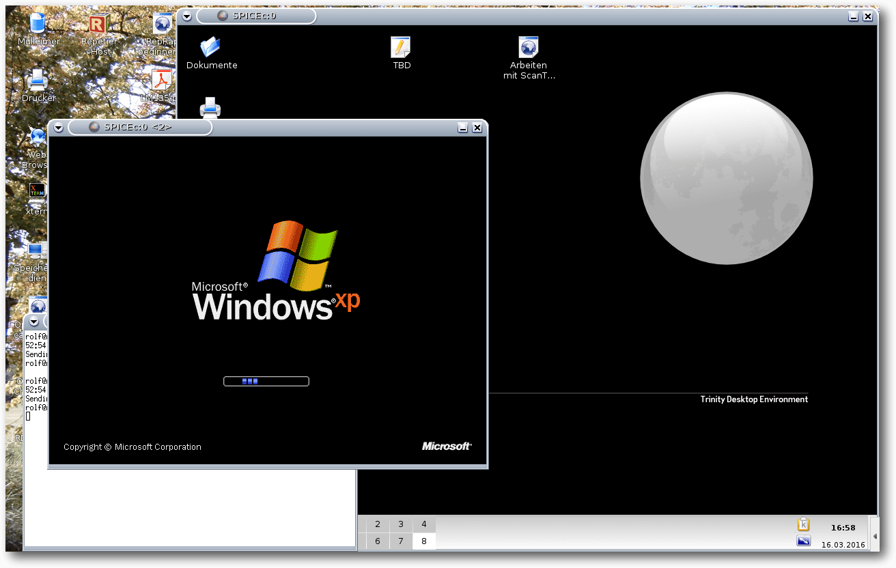Zwei virtuelle Maschinen mit grafischer Benutzeroberfläche unter Linux.
Systembeschreibung
Als Rechner wurde ein gebrauchter Desktop-PC eingesetzt, der eine 64-Bit-CPU (CoreDuo) hat. Diese ermöglicht auch die Virtualisierung von 64-Bit Betriebssystemen in einer virtuellen Maschine. Allerdings unterstützt der Chipsatz des Rechners keine I/O-Virtualisierung. Aufgerüstet wurde der Rechner auf maximal mögliche 8 GByte Hauptspeicher und mit einer 500 GByte SSD-Platte. Die Investitionen betrugen weniger als 500 €. Ferner wurden dem Fundus eine zweite Netzwerkkarte sowie eine ISDN-Karte entnommen und eingebaut. Letztere wird von einem Asterisk-Telefonserver verwendet, der wegen fehlender I/O-Virtualisierung auf der Basismaschine laufen muss. Die Netzwerkanschlüsse (einer davon ist, wie heute üblich, bereits auf dem Board) bedienen den DSL-Anschluss und das lokale Netzwerk (LAN). 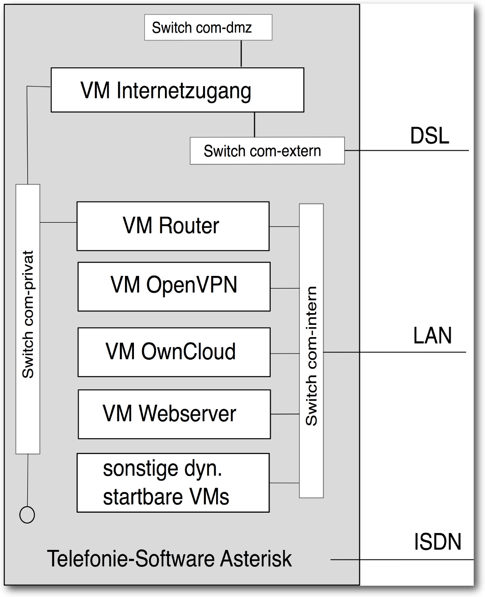Struktur des Servers.
Die internen Verbindungen der verschiedenen virtuellen Maschinen werden mittels Software-Switches hergestellt. Da verschiedene unabhängige Verbindungen nötig sind, wurden mehrere Switches (für die verschiedenen Netze) aufgesetzt, obwohl der verwendete Software-Switch („vde2“) auch die Einrichtung von virtuellen LANs ermöglicht. Das private Netz wird im Wesentlichen zur Verbindung des Internetzugangs mit dem Router verwendet. So ist sichergestellt, dass der Zugangsrechner keine direkte Verbindung zum lokalen Netzwerk hat. Der Zugangsrechner ist nur vom Router aus erreichbar und auch nur mittels ssh-key. Am internen Netz sind neben den virtuellen Maschinen auch die physischen Rechner sowie Drucker, Scanner und ein WLAN-Router angebunden. Zum Netz der demilitarisierten Zone (DMZ) gibt es keine Verbindung von innen. Ein Datenaustausch ist nur über ein gemeinsames Verzeichnis möglich.
Zur Verfügung gestellte Dienste
Als Dienste laufen neben dem Internetzugang, natürlich mit Firewall, auch die üblichen Dienste einer Domain, wie DHCP, Nameserver und der Druckdienst CUPS.Internetzugang
Ohne Internet geht heute in der Computerei fast gar nichts mehr, sodass als erstes die virtuelle Maschine mit dem Internetzugang aufgesetzt werden sollte – sonst kann man bei Problemen keine Suchmaschine befragen und sei es nur mit einem textonly-Browser wie „elinks“. Dazu muss die Netzwerkkarte, die mit dem DSL-Modem verbunden ist, entweder über ein TAP-Gerät (ein vom Kernel bereit gestelltes Software-Netzgerät) oder wie hier über einen Software-Switch mit der virtuellen Maschine verbunden werden. In der Maschine kann dann eine aktuelle Distribution oder auch eine spezielle Firewall-Distribution (z. B. RCP100 [1]) installiert werden. Eine zweite Netzwerkkarte – verbunden mit dem privaten Netz – wird benötigt, um die Verbindung zum lokalen Netzwerk bzw. dem Router herzustellen. Selbstverständlich muss die virtuelle Maschine die Daten zwischen den Netzwerkschnittstellen austauschen können, also ebenfalls Routing-Funktionalität haben. 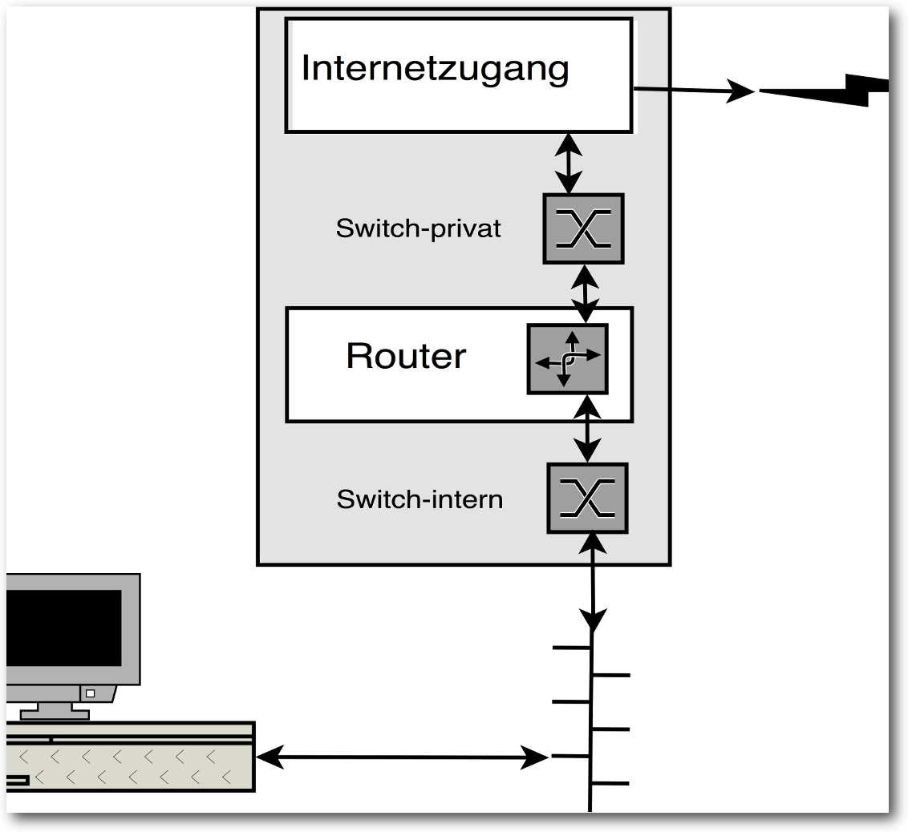Verbindung zum Internet.
Router mit DHCP, DNS, …
Das lokale Netzwerk benötigt weitere Netzwerkdienste. Diese sind mit ihren Konfigurationen in einer zweiten virtuellen Maschine zusammengefasst. Es stehen ein DHCP-Server für die Verteilung von IP-Adressen sowie ein Namensserver für die Auflösung der Rechnernamen im lokalen Netz als auch die Weiterleitung von Anfragen an externe Nameserver zur Verfügung. Da die Rechner des lokalen Netzes auch Zugriff auf das Internet haben sollen, wird die Weiterleitung zum Zugangsrechner durch NAT (network address translation) sichergestellt. Ein Proxyserver (privoxy) filtert auf Wunsch viel Werbung aus. Schließlich bietet noch CUPS seine Dienste zum Drucken an und über einen „sane“-Server kann von jedem Arbeitsplatz aus eingescannt werden.OpenVPN-Zugang
Da Informationen, die im lokalen Netzwerk zur Verfügung stehen, auch von außerhalb erreichbar sein sollen, ist ein sicherer Zugang dafür nötig. Der Zugang ist mit OpenVPN eingerichtet und wird von einer eigenen virtuellen Maschine zur Verfügung gestellt. Diese Maschine enthält wieder alle Konfigurationsdaten und die benötigten Schlüssel für den Betrieb.OwnCloud
Der OwnCloud-Server ist nur intern oder über VPN erreichbar. Hauptaufgabe ist es, einen Datei- und Bilderaustauschdienst sowie ein Adressbuch und einen Kalender anzubieten. Mittels VPN-App ist auch ein Zugriff per Mobiltelefon möglich.Verschiedene virtualisierte (ältere) Systeme
Alte Rechner lassen sich relativ leicht in virtuelle Maschinen übertragen (beispielsweise mit „dd“), sodass alte Arbeiten, Rechnungen oder Spiele weiterhin zur Verfügung stehen, ohne das ein separater Rechner dafür „am Leben erhalten werden muss“. Diese Rechner sind durch die Firewall des Systems geschützt – wenn sie denn Internetzugang brauchen. Gelegentlich können die alten Maschinen (wie freeDOS) nur von qemu – nicht von KVM – gestartet werden, da die alte Software mit den Kernelschnittstellen von KVM nicht zurecht kommt. Es gibt beim Autor eine virtuelle Maschine, die eine ältere Distribution enthält, um eine LibreOffice Versionen vorhalten zu können, die noch alte Star- bzw. OpenOffice-Dokumente anzeigen/konvertieren kann. Solche Maschinen brauchen nur bei Bedarf gestartet zu werden.Zugriffsmöglichkeiten
Der hier beschriebene Server muss und sollte auch nicht unter dem Schreibtisch stehen und benötigt bzw. hat keine grafische Oberfläche. Somit muss der Zugriff darauf typischerweise per Netzwerk erfolgen. Dafür bietet Linux viele Möglichkeiten – per SSH, Zugriff auf die Daten per NFS oder auch durch Umleitung des gesamten Desktops. Auf den Internetzugangsrechner und den Router kann auch über ein Terminal am Server zugegriffen werden, falls es Probleme bei Start der virtuelle Maschine gibt – z. B. nach einem Plattencheck oder Update.Mit Curses und tty
Mittels der Curses-Schnittstelle lässt sich die Ausgabe der betreffenden virtuellen Maschine auf einem seriellen Terminal, wie den virtuellen Linux-Terminals, realisieren.Grafische Systeme
Auf Systemen mit grafischer Oberfläche kann man sich unter Linux z. B. per ssh -Y user@rechner anmelden und dann das gewünschte grafische Programm aufrufen. Auch eine Anmeldung auf einem Fremdrechner (remote-login) lässt sich durch entsprechende Konfiguration des X-Servers einrichten. Anders sieht es aus, wenn in der virtuellen Maschine kein Linux beziehungsweise kein X-Server läuft.SDL
SDL [2] ist ein Simple DirectMedia Layer und wird für die Ausgabe einer virtuelle Maschine auf einem Desktop verwendet. Dies ist dann interessant, wenn man eine virtuelle Maschine z. B. auf einen Laptop kopiert hat und sie unter dessen grafischen Oberfläche laufen lässt.VNC
VNC [3] (steht für „virtual network computing“) und ist ein freies Protokoll zur Übertragung der Bildschirminhalte eines Rechners über Netzwerk. Für das Protokoll stehen verschiedene, auch browserbasierte Viewer zur Verfügung. Allerdings gibt es immer wieder Probleme mit der Synchronisation der Cursor auf dem Darstellungsrechner und dem Bildschirm der virtuelle Maschine. Hier hilft die Option -usbdevice tablet beim Starten von qemu. VNC-Clients (und Server) gibt es auch für Windows – z. B. im Paket tightvnc.Spice
Das Spice-Protokoll [4] wird wohl bei RedHat (weiter-) entwickelt und ermöglicht ein komfortables Arbeiten auf einem entfernten Rechner, der die Oberfläche von GUI-basierten virtuellen System darstellt – ein entsprechender Grafik(karten)treiber für Windows steht zur Verfügung. Der Spice-Server ermöglicht zudem auch, den Sound der virtuellen Maschine netzwerktransparent durchzuleiten und selbst cut and paste zwischen virtueller Maschine und dem Rechner, auf dem die Anzeige erfolgt, ist möglich. USB soll ebenfalls zur virtuellen Maschine durchgereicht werden können.Start virtueller Maschinen bei Bedarf
Einige virtuelle Maschinen müssen nicht permanent laufen, sodass man diese nur bei Bedarf manuell starten will. Damit man sich dafür nicht immer auf der Basismaschine anmelden und das Startskript auf der Command-Line aufrufen muss, wurden Startmöglichkeiten mittels xinet und per wake-on-lan implementiert.Mittels xinet
Bei der Ausgabe einer virtuelle Maschine über das Netzwerk, wobei die Daten mittels xinet ausgeben werden sollen, müssen diese per Standard-I/O angeboten und entgegengenommen werden. Qemu erlaubt es, die Ausgabe von VNC über einen Socket zu leiten. Dann können die Daten mittels socat vom Socket abgeholt und die Eingaben wieder in den Socket eingespeist werden. Ein beispielhafter Konfigurationseintrag für xinet ist im folgenden Listing aufgezeigt.service vnc5 {
disable = no
type = UNLISTED
port = 5905
flags = IPv4
server = /home/winxp/start-winxp.sh
server_args = vnc
socket_type = stream
protocol = tcp
user = winxp
groups = yes
wait = no
}
Nach einem (re-)Start des xinetd-Servers lauscht dieser dann an dem angegebenen
Port (hier 5905). Wenn sich über diesen Port ein Programm verbindet, wird die
Zeile server ausgewertet und das darin angegebene Startskript vom
angegebenen user und mit der Option vnc (steht hinter dem Eintrag
server_args) aufgerufen. Das zweite Listing zeigt den dafür zuständigen Teil
des Startskripts (Listing startvm())
disable = no
type = UNLISTED
port = 5905
flags = IPv4
server = /home/winxp/start-winxp.sh
server_args = vnc
socket_type = stream
protocol = tcp
user = winxp
groups = yes
wait = no
}
function startVM ( ) {
(
flock --nonblock 9 || exit 1
nohup kvm ${OPTIONS[@]} >/dev/null 2>&1
) 9>"/var/lock/kvm-${IMG}.lock & # $IMG enthält den Namen der VM"
}
# $OPTIONS ist ein Array mit qemu/kvm Aufrufoptionen
OPTIONS=("${OPTIONS[@]}" "-vnc unix:${VNC_SOCKET}" "-usbdevice tablet")
startVM
number_of_attempts="0"
max_attempts="10"
socket_missing="1"
while [ "$socket_missing" -ne 0 -a "$number_of_attempts" -lt "$max_attempts" ]
do
socat -T 0.1 - "UNIX-CONNECT:${VNC_SOCKET}" >/dev/null 2>&1
socket_missing="$?"
if [ "$socket_missing" -ne 0 ]
then
sleep 0.1 fi
number_of_attempts="$(($number_of_attempts + 1))"
done
if [ "$socket_missing" -eq 0 ]; then
socat – "UNIX-CONNECT:${VNC_SOCKET}"
exit $? else
exit 1 fi
Listing: Die startvm()-Funktion.
(
flock --nonblock 9 || exit 1
nohup kvm ${OPTIONS[@]} >/dev/null 2>&1
) 9>"/var/lock/kvm-${IMG}.lock & # $IMG enthält den Namen der VM"
}
# $OPTIONS ist ein Array mit qemu/kvm Aufrufoptionen
OPTIONS=("${OPTIONS[@]}" "-vnc unix:${VNC_SOCKET}" "-usbdevice tablet")
startVM
number_of_attempts="0"
max_attempts="10"
socket_missing="1"
while [ "$socket_missing" -ne 0 -a "$number_of_attempts" -lt "$max_attempts" ]
do
socat -T 0.1 - "UNIX-CONNECT:${VNC_SOCKET}" >/dev/null 2>&1
socket_missing="$?"
if [ "$socket_missing" -ne 0 ]
then
sleep 0.1 fi
number_of_attempts="$(($number_of_attempts + 1))"
done
if [ "$socket_missing" -eq 0 ]; then
socat – "UNIX-CONNECT:${VNC_SOCKET}"
exit $? else
exit 1 fi
Per Wake-On-Lan
Da eine virtuelle Maschine immer eine eindeutige MAC-Adresse benötigt, wenn sie im Netzwerk erreichbar sein soll, kam die Idee auf, eine virtuelle Maschine mittels Wake-On-Lan zu starten. Natürlich lauscht eine ausgeschaltete virtuelle Maschine nicht am (virtuellen) Netzwerk um ein Wake-On-Lan-Paket zu erkennen, sodass diese Aufgabe von einem Server – letztlich einem Proxy – übernommen werden musste. Ein Perlprogramm, abgeleitet aus dem Programm „wakeonlan“ horcht nun stellvertretend an der echten Netzwerkschnittstelle und schaut in einer Tabelle nach, wie der zugehörige Rechner heißt, dessen MAC-Adresse empfangen wurde. Steht ein entsprechender Eintrag in einer Konfigurationsdatei, so wird die entsprechende Maschine gestartet. Mit wake-on-lan können dann sowohl virtuelle als auch reale Maschinen eingeschaltet werden.Systemstart
Selbstverständlich sollen Internetzugangsrechner, Router, OpenVPN-Rechner und der OwnCloudRechner beim Starten des Servers hochgefahren werden. Dazu wird ein entsprechendes Startskript benötigt. Dieses ruft die Startskripte der virtuellen Maschinen mit den Optionen auf, die in einem Array in /etc/kvm/virtualmachines.conf hinterlegt wurden. Das Startskript der virtuelle Maschine verhindert, dass eine Maschine mehrfach gestartet werden kann.Beenden einer virtuellen Maschinen
Alle virtuellen Maschinen werden so gestartet, dass sie über einen Socket zur virtuellen Hardware, den qemu-monitor erreichbar sind. Über diesen können Informationen zur laufenden Maschine erfragt werden (z. B. durch eine Terminalanbindung mit unixterm) oder Schnittstellen ein- beziehungsweise abgeschaltet werden. Die virtuelle Maschine selbst kann vom Monitor mittels des Befehls system_powerdown beendet werden, was zum geordneten Herunterfahren der Maschine führt, so als ob man den Ein-/Ausschalter an einem physisch vorhandenen Rechner gedrückt hätte. Diese Möglichkeit nutzt das Skript des Systemstarts beim Shutdown aus, anstatt die virtuelle Maschine mit einem Kill-Signal zu beenden. Man kann den system_powerdown-Befehl auch per Commandline-Aufruf auf dem Basisrechner mittels socat schicken. Der Befehl sieht dann wie folgt aus:# echo system_powerdown | socat – UNIX-CONNECT:/var/run/kvm/socket_der_virtuellen Maschine
Einrichten der Basismaschine
Nach der Grundinstallation wurden folgende Einstellungen vorgenommen, die die Zusammenarbeit mit virtuellen Maschinen verbessern: Über das Startskript /etc/rc.local wird die Kerneloption ksm (kurz für Kernel Samepage Merging), durch die identischer Programmcode nur einmal im Speicher vorgehalten werden kann/soll, aktiviert. Dazu werden in /etc/rc.local folgende Zeilen eingefügt:# echo 1 > /sys/kernel/mm/ksm/run
# echo 200 > /sys/kernel/mm/ksm/sleep_millisecs
In /etc/modules wurde
# echo 200 > /sys/kernel/mm/ksm/sleep_millisecs
loop max_part=15
nbd max_part=15
eingetragen, sodass jede einzelne Partition aus bis zu 15 Partitionen eines
Images einer virtuellen Maschinen ins Filesystem des Basisrechners eingebunden
werden kann.
Alle Partitionen der SSD werden mit der Option discard zur Unterstützung
der Verwaltung der freien Zellen der SSD eingebunden.
Die umfangreiche Netzwerkkonfiguration muss natürlich funktionieren, bevor man
sich an die Installation der virtuelle Maschinen macht.
Alle virtuellen Maschinen können ein externes Verzeichnis einbinden, sodass
darüber ein Austausch mit der Basismaschine ohne Netzwerkverbindung möglich
ist. Ferner soll jede Maschine aus Sicherheitsgründen mit den Rechten eines
eigenen Users laufen.
Für die Installation einer virtuellen Maschine entstand ein umfangreiches
Shellskript. Das Skript legt den User an, gibt diesem die benötigten Rechte
durch Eintrag in den entsprechenden Gruppen, legt das home-Verzeichnis und ein
Image für die virtuelle Maschine sowie ein Startskript für die virtuelle
Maschine mit Einbindung in das interne Netz an. Das Startskript kann mit
verschiedenen Optionen aufgerufen werden, zum Beispiel um Ausgaben auf dem Terminal des
Basisrechners anzuzeigen (dafür müssen allerdings Lese- und Schreibrechte für
den User und das angegebene Terminal eingerichtet worden sein), Ausgaben über
xinet mit VNC oder mittels des Spice-Protokolls zu ermöglichen oder für die
Installation einer Bildschirmausgabe mittels VNC auf den Standardport.
Dabei wird mit folgenden Konventionen gearbeitet: Der Name der virtuellen
Maschine ist auch Name des Users und dessen Gruppe sowie des benötigen
Plattenimages und Teil des Namens des Startskripts.
Auf Grund dieser Konventionen kann der Wake-On-Lan-Proxy mit einem Eintrag in
das Startskript, welches für den Start der virtuellen Maschine benötigt wird,
das Verzeichnis und den zugeordneten User bestimmen, um die virtuelle Maschine zu
starten.
Eine virtuelle Maschine lässt sich mit dem Standard-Befehl userdel wieder
problemlos entfernen.
nbd max_part=15
Entscheidungen
Vor der Realisierung des gegenwärtigen Systems wurden VirtualBox [5] mit qemu/KVM, verglichen. Da VirtualBox vom Desktop her bekannt war, wurden dessen Handhabbarkeit unter Serverbedingungen zuerst untersucht. Schließlich wurde der Server unter KVM/qemu aufgesetzt, wofür folgende Kriterien ausschlaggebend waren:- Ausgaben der virtuellen Maschinen können auch auf Terminals des Basisrechners erfolgen.
- Ausgaben des Bildschirms von virtuellen Maschinen mit grafischer Oberfläche können mittels VNC und/oder besser noch mittels Spice erfolgen.
- qemu/KVM unterstützt SSDs besser. Freigegebener Speicherplatz auf der virtuellen Festplatte meldet qemu/KVM ab Version 2 auch an das Laufwerk.
- KVM/qemu ist für verschiedene Systeme verfügbar, sodass man nicht unbedingt auf x86-64-Bit PCs angewiesen ist. Unter Umständen muss dann die intern verwendete CPU emuliert werden.
- Im Notfall (Fehlkonfiguration) kann ein Image (virtuelle Festplatte) auch in das lokale Dateisystem eingebunden oder mit dem Kernel des Basissystems gestartet werden, z. B. um den Bootloader nach Übertragung eines vorhandenen Systems in eine virtuelle Maschine (physical-to-virtual) neu installieren zu können.
- KVM/qemu kann mit den Images von VirtualBox und VMWare arbeiten, umgekehrt geht es in aller Regel nicht. Somit stehen viele virtuelle Maschinen aus dem Internet per Download (zum Ausprobieren) zur Verfügung.
Welche Virtualisierungskonzepte?
Für die Realisierung des Servers kamen nur Systeme in Betracht, die ganze Rechner virtualisieren können – keine virtuelle Maschinen, wie beispielsweise der Perl-Interpreter oder die Java-Virtuelle-Maschine. Hier ein kurzer Überblick über Virtualisierungskonzepte.Teil-Virtualisierer
Die einfachsten und somit unter Unix-artigen Betriebssystem seit langem verfügbaren Programme sind „chroot“ oder das unter BSD vorhandene „jails“. Beide ermöglichen den Betrieb von mehreren Programmen – meist Servern (wie FTP- oder Webserver) – in einer geschützten Umgebung, ohne dass ein Einbruch in den Server einen Durchgriff auf das darunterliegende System ermöglicht. Die entsprechenden Programme gehören zum Lieferumfang der Betriebssysteme. Webhoster haben in früheren Zeiten damit einfache Dienste abgeschottet. Umfangreichere Systeme der Webhoster sollten für die Kunden auch dezidierte Datenbank-, Mail-, FTP- und Webserver zur Verfügung stellen, wobei die Kunden diese teilweise selbst verwalten wollen oder sollen. Allerdings müssen die Kunden gegeneinander isoliert sein. Dies führte zur Entwicklung von etwas umfangreicheren virtuellen Umgebungen wie OpenVZ [7], LXC – LinuX-Container [8] – bis hin zu Docker [9]. Diesen allen ist gemeinsam, dass die zur Verfügung gestellten Dienste unter dem Kernel des Host-Betriebssystems laufen. Damit kümmert sich der Betreiber um Updates. Das heißt aber auch, dass auf solchen Systemen letztlich nur Linux-Programme laufen können.Voll-Virtualisierer
Diese bilden (meist) einen PC – bzw. dessen BIOS und (einige) CPU-Befehle – in Software nach, sodass dann beliebige Systeme installiert werden können. Eines der ersten erschwinglichen Programme war VMWare-Workstation. Eine Desktopversion ist noch immer erschwinglich, die Serverversionen gehen jedoch erheblich ins Geld. Die Firma Sun entwickelte den Virtualisierer VirtualBox [5], der nach dem Aufkauf von Sun durch Oracle jetzt über deren Webseiten bezogen werden kann. VirtualBox ist kostenlose Software und seit 2010 unter der GPL lizenziert. Die Software wird gerne auf Desktop-Systemen eingesetzt, da eine grafische Administrationsoberfläche und die grafische Ausgabe die vorhandene grafische Umgebung nutzt. Bei einer Serverinstallation ist ein GUI in aller Regel nicht gegeben. Virtuelle Maschinen sind per Netzwerk unter VirtualBox nur über das Protokoll RDP (steht für Remote Desktop Protokoll) oder ein installiertes ssh erreichbar. Ebenfalls unter der GPL veröffentlicht, sind qemu [10] und KVM [11] wobei KVM eine Variante von qemu ist, die direkt mit den im Kernel vorgesehenen Schnittstellen zur Virtualisierung kommuniziert. Dadurch brauchen weniger CPU-Befehle und weniger I/O emuliert zu werden; ein Durchgriff auf Systemressourcen ist einfacher und somit ist KVM deutlich performanter. Mittlerweile hat IBM qemu/KVM zu der von ihnen bevorzugte Virtualisierungsplattform erkoren, was sich auch im beschleunigten Entwicklungzyklus niederschlägt und vermutlich auch die längerfristige Verfügbarkeit garantiert. Eine Zwischenposition nimmt Xen [12] ein. Dieses System benötigt einen angepassten Kernel auf dem Hostsystem, der es ermöglicht, PCI-Geräte an die virtuelle Maschine durchzuleiten. Unter Xen können, auch wenn die CPU keine Virtualisierung unterstützt, virtuelle Linux-Maschinen mit angepasstem Kernel laufen. Bei voll virtualisierten Systemen, also mit CPU- und I/O-Virtualisierung, können auch nicht angepasste Systeme wie Windows virtualisiert werden. Xen gibt es in einer freien und einer kommerziellen Version.Gründe bzw. Wünsche an das System
Ziel der Implementation war eine schnelle bzw. recht einfache Übertragung des Systems auf einen weiteren oder neuen Rechner. Infrastruktur und verschiedene Arbeitsumgebungen sollen langfristig zur Verfügung stehen, ohne von Hardware (speziell Grafik-, Sound- oder Netzwerkkarten) abhängig zu sein. Diese werden dem Gastsystem (unveränderlich) von der virtuellen Maschine zur Verfügung gestellt. Wenn also ein Virtualisierer an das Netzwerk kommt, kommt auch das Gastsystem dran. Daraus ergibt sich die gewünschte einfache Sicherungsstrategie, denn es braucht nur noch eine Datei und das Startskript für jede virtuelle Maschine kopiert zu werden, was mit dem Systembefehl cp möglich ist. Ferner sollten verschiedene Umgebungen (pseudo-Hardware und Distribution) zu Testzwecken zur Verfügung stehen, um z. B. Sicherungssystem, Schulungssystem, „exotische“ Dateisysteme u. a. ausprobieren zu können. Vorhandene Entwicklungsumgebungen – auch noch aus Zeiten von Windows95 – sollten weitgehend lauffähig bleiben.Vorgeschichte
Dem voraus gingen verschiedene Versionen dieses Netzwerks beginnend mit zwei ständig laufenden Rechnern, wovon einer die Internetverbindung und einen Anrufbeantworter auf ISDN-Basis zur Verfügung stellte. Dieser Rechner wurde in einem späteren Konzept auf den Betrieb mittels CD und RAM-Disk umgestellt, was zu einer Verbesserung der Sicherheit und einer erste Stromkostenersparnis führte, da in diesem Rechner keine Platte mehr Strom verbrauchte. Die dritte Variante dieser Domain-Infrastruktur lief auf einem 32-Bit-Rechner unter Xen, da Xen das Weiterreichen von PCI-Hardware (hier der ISDN-Karte für den Anrufbeantworter) ermöglicht. Das Xen-System lief von einer SD-Karte im 24/7-Betrieb, der Router lief nach wie vor von Platte, die jedoch über Nacht heruntergefahren wurde. Die ehemals verschiedenen Rechner waren nun logisch in einem Rechner zusammengefasst, was zu einer weiteren deutlichen Stromkostenersparnis führte. Nachdem die SD-Karte dieses Rechners kaputt gegangen war, vermutlich wegen zu vieler Schreiboperationen, musste ein neuer Rechner aufgesetzt werden, dessen Aufbau zuvor beschrieben wurde. Links[1] https://sourceforge.net/projects/rcp100
[2] https://de.wikipedia.org/wiki/Simple_DirectMedia_Layer
[3] https://de.wikipedia.org/wiki/Virtual_Network_Computing
[4] https://de.wikipedia.org/wiki/SPICE_(Protokoll)
[5] https://www.virtualbox.org/
[6] http://www.golem.de/news/virtuelle-maschinen-virtualbox-funktioniert-auch-ohne-grafische-oberflaeche-1603-119609.html
[7] https://openvz.org/
[8] https://linuxcontainers.org/
[9] https://www.docker.com/
[10] http://wiki.qemu.org/
[11] http://www.linux-kvm.org/page/Main_Page
[12] http://www.xenproject.org/
| Autoreninformation |
| Rolf Schmidt nutzt Linux seit Version 0.99 und arbeitet seit mehr als 15 Jahren nur unter Linux. |
Beitrag teilen Beitrag kommentieren
Zum Inhaltsverzeichnis
Inkscape für Einsteiger – Teil I: Grundlagen
von Maren Hachmann Dieser Artikel richtet sich an Anfänger im Bereich Vektorgrafik, die sich jedoch bereits mit einfacher Bildbearbeitung (z. B. Fotos nachbearbeiten) auskennen. Er gibt nicht nur eine Einführung in die Grundlagen, die benötigt werden, um das Prinzip „Vektorgrafik“ zu verstehen, sondern erklärt auch, wie Inkscape eigentlich entsteht. Redaktioneller Hinweis: Der Artikel „Inkscape für Einsteiger – Teil I: Grundlagen“ erschien erstmals bei Vektorrascheln [1].Was ist Inkscape?
Inkscape [2] ist ein Grafikprogramm, mit dem man Vektorgrafiken erstellen kann. Es ist quelloffen, das heißt jeder kann den Programmcode [3] einsehen, man nennt dies auch „Open Source“. Inkscape steht unter einer freien Lizenz (der GPL [4]), die es jedem erlaubt, das Programm zu einem beliebigen Zweck zu verwenden, den Programmcode zu verändern und es weiterzugeben, und es wird von einer Gemeinschaft von engagierten, freiwilligen Entwicklern fortwährend verbessert [5]. Viele Nutzer engagieren sich ebenfalls für Inkscape – zum Beispiel, indem sie anderen Nutzern helfen. Es steht also, anders als bei vielen anderen Programmen, keine Firma hinter Inkscape, sondern eine über die ganze Welt verstreute Gemeinschaft von Freiwilligen mit einem gewählten Vorstand [6] und einer Dachorganisation (Software Freedom Conservancy [7]), die einen rechtlichen Rahmen für die Aktivitäten der Mitwirkenden schafft (z. B. damit das Projekt Spenden annehmen kann). Alle, die bei diesem Projekt mitmachen, sind damit Teil der weltweiten Inkscape-Community [8].Was ist eine Vektorgrafik?
Vektorgrafiken bestehen aus einzelnen, voneinander unabhängigen Objekten. Diese sind durch ihre geometrischen Eigenschaften definiert, z. B. ein Kreis durch die Lage seines Mittelpunktes und die Größe seines Radius. Für unregelmäßige Formen mit kurvigen Außenlinien werden die Lage bestimmter Punkte auf der Linie und die Krümmung der Linien, die diese Punkte miteinander verbinden, gespeichert. 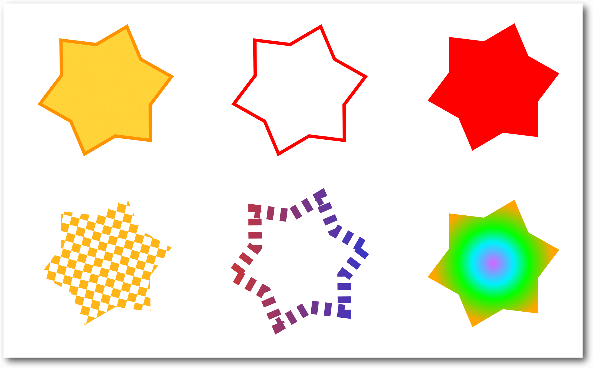Diese Vektorsterne unterscheiden sich nur in den Eigenschaften für Füllung und Kontur.
Alle Objekte in einer Vektorgrafik haben einen Satz an Eigenschaften, die sich leicht verändern lassen. So kann man rasch mit einem Klick z. B. die Farbe der Füllung oder der Konturlinie eines Objektes komplett ändern, diese entfernen oder durch ein Muster ersetzen. Beispiele für solche Eigenschaften sind Füllfarbe, Füllmuster, Füllung mit einem Farbverlauf, Farbe der Kontur, Dicke der Kontur, Konturmuster, Art der Konturlinie (z. B. gestrichelt, gepunktet usw.) oder die Art von Markern (z. B. Pfeile oder andere Symbole) im Verlauf eines Pfades.
Vergleich zwischen Vektorgrafik und Rastergrafik
Immer scharf
Eine Vektorgrafik verhält sich anders als z. B. ein Foto, das mit einer Digitalkamera aufgenommen worden ist. Digitalfotos sind Rastergrafiken und bestehen damit aus einer großen Menge farbiger Punkte, die in einer bestimmten Reihenfolge (dem Raster) angeordnet sind. Wenn man beim Betrachten genügend Abstand zum Bild einhält, ergibt sich aus all den kleinen Punkten ein sinnvolles Bild. Sobald man das Foto aber zu stark vergrößert oder zu nah herangeht, werden die einzelnen Bildpunkte erkennbar, das Bild wirkt pixelig. 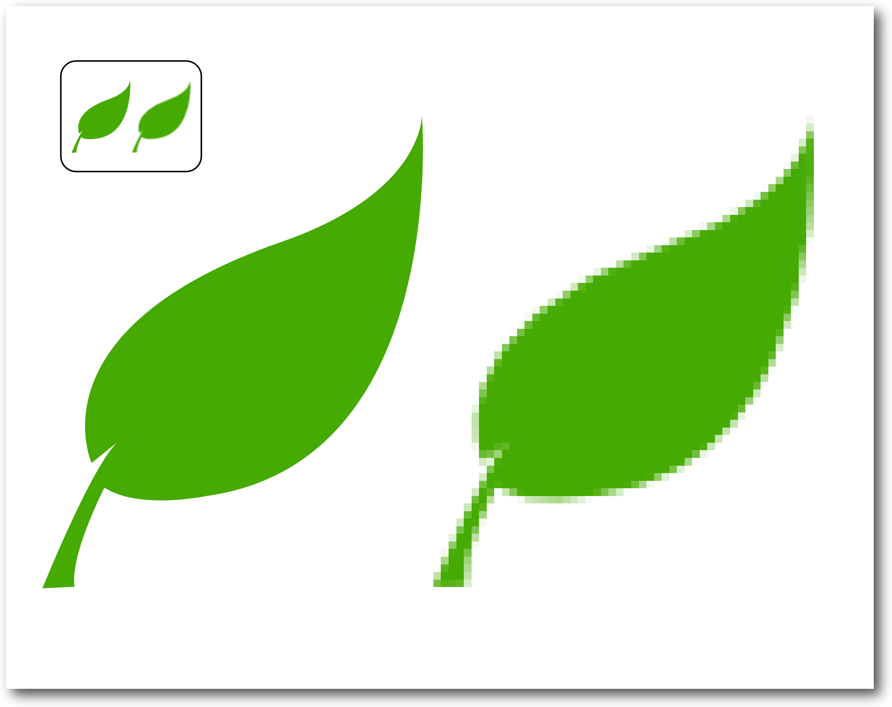Beim Vergrößern wird die Rastergrafik pixelig, das Vektorbild (links) bleibt scharf.
Da Vektorgrafiken in Form einer Anweisung für eine Zeichnung, mit den geometrischen Eigenschaften der enthaltenen Objekte, gespeichert sind (quasi als Geometrie-Aufgabe für den Computer), muss der Computer zunächst berechnen, wie diese auf dem Bildschirm (dessen Bild aus Bildpunkten zusammengesetzt ist) dargestellt werden kann. Dabei ist es egal, wie stark man das Bild vergrößert – pixelig wird es nicht. Denn der Computer kann die Bildpunkte für die Darstellung am Bildschirm für jede Vergrößerungsstufe genau berechnen. So ist eine Vektorgrafik immer scharf (es sei denn, man fügt absichtlich Unschärfe hinzu).
Leicht änderbar
Vektorgrafiken kann man – im Vergleich zu Rastergrafiken – sehr leicht grundlegend verändern, indem man nur einige der Eigenschaften ändert. Von Grün zu Rot, mit breitem Rand oder ohne, kleiner oder größer, oder auch mit Pünktchenmuster – alles kein Problem. Bei Rastergrafiken müsste hierfür jeder Bildpunkt einzeln von einem Programm angeschaut werden – und manchmal ist es gar nicht so leicht für das Programm, zu erkennen, welcher Bildpunkt zu welchem Objekt gehört, denn eigentlich gibt es ja gar keine Objekte in einer Rastergrafik, nur farbige Punkte. 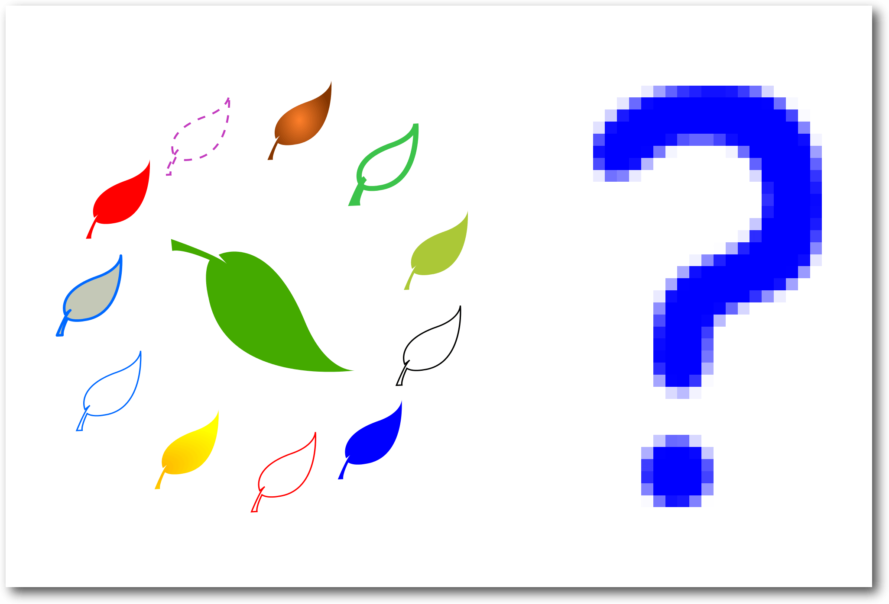Füllung, Kontur und Co. sind bei einer Vektorgrafik leicht zu verändern – bei einer Rastergrafik geht dies nur über komplexe Rechenoperationen.
Geringere Dateigröße – höherer Rechenaufwand
Vektorgrafiken brauchen – solange sie eine überschaubare Anzahl von Objekten enthalten – nur sehr wenig Speicherplatz, da nicht für jeden einzelnen Bildpunkt die Information für die Farbe gespeichert werden muss, sondern jede Eigenschaft nur einmal pro Objekt gespeichert wird. Dies ist ein Vorteil für Bilder, die auf Webseiten verwendet werden sollen, denn so bleibt die übertragene Datenmenge klein und die Webseite lädt zügig. Andererseits kann es bei sehr komplexen Bildern länger dauern, diese für die Darstellung auf dem Bildschirm aufzubereiten.Unterschiedliche Anwendungsbereiche
Raster- und Vektorbilder haben durch ihre unterschiedlichen Eigenschaften jeweils bestimmte Anwendungsbereiche, die sich gegenseitig ergänzen.Das Vektorbild (rechts) enthält nur 8 verschiedene Farben, besteht jedoch bereits aus 28000 einzeln definierten Punkten und deren Verbindungslinien. Es lässt sich nur langsam bearbeiten.
Man verwendet Rasterbilder für Bilder mit vielen verschiedenfarbigen, unregelmäßigen Inhalten, also vorrangig für Fotos. Wenn man diese im Vektorformat abspeichern wollte, würde es bis zur Darstellung auf dem Bildschirm oft sehr lange dauern. Je nachdem wie stark man das Bild deswegen vereinfachen möchte, enthielte es auch weniger verschiedene Farben und hätte eine viel geringere Qualität. Bei gleicher Qualität hingegen wäre die Dateigröße enorm, da für jede vorhandene Farbe ein eigenes Objekt angelegt werden müsste (bei einer normalen Fotogröße von 1600x1200 Pixeln könnten dies bis zu 1,9 Millionen Objekte werden, falls jedes Pixel eine andere Farbe hat). Vektorbilder verwendet man daher eher für Logos, Clipart, Buttons, Icons und andere Grafiken, die sich durch größere, zusammenhängende Farbbereiche auszeichnen oder sich gut in einzelne Objekte aufteilen lassen. Es sind aber – abhängig vom dargestellten Objekt und den Fähigkeiten des Künstlers – auch sehr realistisch aussehende Zeichnungen möglich, die durch geschickte Verwendung von Farbverläufen einen Eindruck dreidimensionaler Tiefe erzeugen. Bevor man sich also in Inkscape stürzt, um das Bild seiner Träume zu gestalten, sollte man sich überlegen, ob Inkscape dafür auch das richtige Werkzeug ist. Möchte man nur ein Foto bearbeiten oder ein großes, realistisches Bild wie mit einem Pinsel malen, so eignen sich andere Programme dafür besser (z. B. The Gimp [9] für Fotobearbeitung oder Krita [10] zum Zeichnen von Gemälden. Beide sind ebenfalls Open-Source-Projekte.).
Was ist ein SVG?
SVG ist ein Speicherformat für Vektorgrafiken. Die Abkürzung steht für „Scalable Vector Graphics“ – skalierbare Vektorgrafiken. Es wird von Inkscape verwendet, da es einem offenen Standard folgt, und somit die Dateien, die mit Inkscape erstellt worden sind, universell verwendbar sind. Webbrowser, wie z. B. Mozilla Firefox, Google Chrome oder auch Microsoft Edge, aber auch viele andere Programme, unterstützen diesen Standard. Dies macht es möglich, dass Bilder, die man mit Inkscape erstellt hat, nicht „verloren“ sind, sobald man gerade kein Inkscape-Programm zur Verfügung hat. Sie können (zumeist) ohne weitere Änderungen direkt in eine Webseite eingebunden werden oder von anderen Programmen (z. B. einem Office-Programm oder einem Desktop-Publishing-Programm) bearbeitet werden. Die Organisation, die den SVG-Standard festschreibt, ist das World Wide Web Consortium (W3C) [11] – das ist die Organisation, die auch die Standards für HTML oder CSS (die Sprachen, in denen Webseiten geschrieben und gestaltet werden), erarbeitet. Einer der Inkscape-Entwickler ist Mitglied der SVG-Arbeitsgruppe des W3C. Er vertritt dort die Interessen von Inkscape und arbeitet mit daran, dass der SVG-Standard weiter verbessert wird.Grundelemente
Das SVG-Dateiformat kennt eine Reihe von Grundelementen, aus denen Bilder aufgebaut werden können. Dies sind (unter anderem) gerade Linien, Linienzüge (bestehend aus mehreren, miteinander verbundenen geraden Linien), Pfade (bestehend aus einer oder mehreren gekrümmten Linien), Kreise, Ellipsen, Rechtecke, Polygone, Texte, Rastergrafiken (ja, auch diese können in einem SVG verwendet werden!) und Kopien anderer Objekte (ein und dasselbe Objekt wird dann mehrfach in der Zeichnung dargestellt, aber nur das Original kann verändert werden). 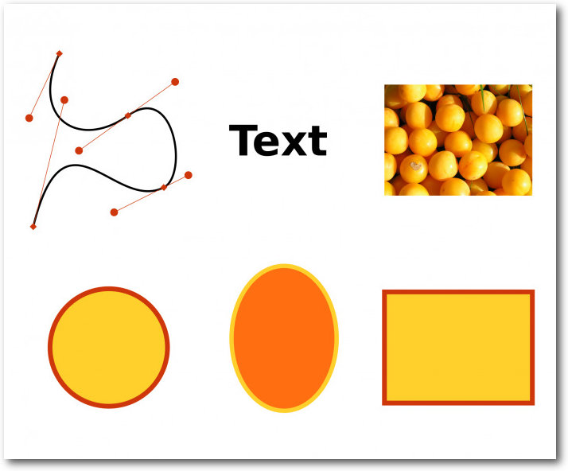Einige SVG-Grundelemente: Pfad, Text, Rasterbild, Kreis, Ellipse, Rechteck.
Inkscape nutzt nicht alle der verfügbaren Elemente – so werden z. B. gerade Linien oder Polygone auch als „Pfade“ gespeichert. Dafür gibt es in Inkscape jedoch einige zusätzliche Elemente, wie zum Beispiel Sterne oder Spiralen – diese werden gleichzeitig als Pfad (so dass sie von anderen Programmen gelesen werden können) und als Stern/Spirale mit bestimmten Eigenschaften (Länge der Sternspitzen, Anzahl der Spiralwindungen, so dass diese Eigenschaften mit wenigen Mausklicks verändert werden können) gespeichert.
Stapelordnung
Objekte in einem SVG liegen in einer bestimmten Reihenfolge übereinander, so wie dies z. B. auch bei einer Photocollage der Fall wäre. So kommt es, dass ein Objekt auch von anderen Objekten vollständig verdeckt werden kann. 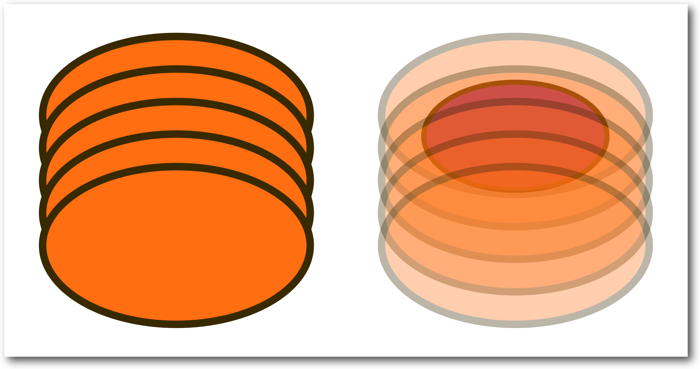Jedes Objekt liegt an einer bestimmten Höhe in der Stapelordnung. Rechts sind die Ellipsen teiltransparent, so dass man das darunterliegende Objekt erkennen kann.
Und auch wenn zwei Objekte scheinbar einfach nebeneinander liegen, so „wissen“ sie immer ganz genau, auf welcher Höhe im Stapel sie sich gerade befinden. Ein Objekt kann niemals gleichzeitig über und unter einem anderen Objekt liegen, wie das zum Beispiel bei einer Hand, die einen Gegenstand umfasst, der Fall wäre. Wenn man so etwas darstellen möchte, muss man das Objekt (die Hand) aus mehreren Teilen zusammensetzen, die dann über bzw. unter dem anderen Objekt liegen. Diese Stapelordnung kann in Inkscape natürlich auch verändert werden. Neu erstellte Objekte liegen immer erst mal ganz oben.
Gruppen
Mehrere Objekte können zu einer Gruppe zusammengefasst werden. Diese verhält sich dann wie ein einzelnes Objekt. Dies ist bei der Bearbeitung von komplexen Zeichnungen sehr hilfreich, denn man kann nach dem Gruppieren ganz einfach die gesamte Gruppe verschieben, ihre Farbe oder Konturdicke ändern oder sie auch verkleinern und vergrößern, wobei die Lagebeziehungen zwischen den gruppierten Objekten erhalten bleiben. Wenn also zum Beispiel ein Gesicht aus einer Gruppe mit einem Oval im Hintergrund, zwei Augen, einer Nase und einem Mund besteht, so bleibt das Auge immer an der richtigen Stelle, egal ob man das Gesicht staucht, streckt, dreht, vergrößert oder verkleinert.Klartext/Baumstruktur
SVG-Grafiken werden im Klartext gespeichert.Eine SVG-Grafik wird im Klartext gespeichert.
Wenn man ein SVG-Bild mit einem Texteditor betrachtet, sieht es dann in etwa so aus wie in hallo_welt.svg
{kind=link}
<svg xmlns:rdf="http://www.w3.org/1999/02/22-rdf-syntax-ns#" xmlns="http://www.w3.org/2000/svg" height="25.468mm" width="80.667mm" version="1.1" xmlns:xlink="http://www.w3.org/1999/xlink" viewBox="0 0 285.82949 90.241061" xmlns:dc="http://purl.org/dc/elements/1.1/">
<defs>
<radialGradient id="radialGradient4173" gradientUnits="userSpaceOnUse" cy="448.57" cx="113.6" gradientTransform="matrix(1 0 0 1.6542 1.5174 -272.63)" r="38.214">
<stop stop-color="#5f0000" offset="0"/>
<stop stop-color="#e11919" offset="1"/>
</radialGradient>
</defs>
<g transform="translate(-50.842 -128.67)">
<rect height="59.383" stroke="#60c447" stroke-width="3.2456" fill="#ffffff" ry="15.159" width="265.81" y="144.1" x="69.237"/>
<g transform="matrix(.59174 0 0 .59174 23.976 -106.19)">
<ellipse id="path4172" style="color:#000000;" rx="26.786" ry="38.214" cy="435.11" cx="115.11" fill="url(#radialGradient4173)"/>
<use xlink:href="#path4172" transform="matrix(.5 .86603 -.86603 .5 466.95 137.5)" height="100 <use xlink:href="#path4172" transform="matrix(-0.5 .86603 -.86603 -0.5 581.35 610.64)" height="100 <use xlink:href="#path4172" transform="matrix(-1 0 0 -1 228.8 946.28)" height="100 <use xlink:href="#path4172" transform="matrix(-0.5 -.86603 .86603 -0.5 -238.15 808.78)" height="100 <use xlink:href="#path4172" transform="matrix(0.5 -.86603 .86603 0.5 -352.55 335.64)" height="100 </g>
<text font-size="48.181px" line-height="125 </g>
</svg>
Listing: hallo_welt.svg
Jedem, der schon einmal den Quelltext einer Webseite gesehen haben, dürfte die
Struktur der Datei bekannt vorkommen – was daran liegt, dass HTML und SVG beide
auf XML basieren. Das ist eine Auszeichnungssprache, die eine baumartige
Struktur aufweist (ineinander verschachtelte
Elemente) und bei der jedes Element
mit <dings> anfängt und mit </dings> wieder aufhört – oder auch einfach nur
aussieht wie <dings lange-Liste-mit-Eigenschaften />, wenn es keinen weiteren
Inhalt, sondern nur Eigenschaften hat.
Der Vorteil an einem solchen Format ist, dass es sowohl von einem Computer als
auch von einem Menschen einigermaßen gut gelesen werden kann (man sollte für SVG
jedoch etwas Englisch können). Es kann leicht mit verschiedenen Programmen
automatisiert bearbeitet werden, so dass z. B. das Austauschen von Namen in
Besucherausweisen oder von Zahlen auf Eintrittskarten mit einem kurzen Programm
schnell gemacht ist. Es gibt viele kleine Hilfsprogramme, die einen bei einer
solchen Aufgabe unterstützen können.
Auch kann man problemlos per Hand kleine Änderungen in der Datei vornehmen, zum
Beispiel, um Animationen daraus zu erstellen.
Die meisten Leute möchten ihre Zeichnungen aber wohl doch lieber mit der Maus
oder dem Grafiktablett bearbeiten, so dass sie sofort sehen, wie sich das Bild
verändert – und dafür gibt es dann Inkscape!
<defs>
<radialGradient id="radialGradient4173" gradientUnits="userSpaceOnUse" cy="448.57" cx="113.6" gradientTransform="matrix(1 0 0 1.6542 1.5174 -272.63)" r="38.214">
<stop stop-color="#5f0000" offset="0"/>
<stop stop-color="#e11919" offset="1"/>
</radialGradient>
</defs>
<g transform="translate(-50.842 -128.67)">
<rect height="59.383" stroke="#60c447" stroke-width="3.2456" fill="#ffffff" ry="15.159" width="265.81" y="144.1" x="69.237"/>
<g transform="matrix(.59174 0 0 .59174 23.976 -106.19)">
<ellipse id="path4172" style="color:#000000;" rx="26.786" ry="38.214" cy="435.11" cx="115.11" fill="url(#radialGradient4173)"/>
<use xlink:href="#path4172" transform="matrix(.5 .86603 -.86603 .5 466.95 137.5)" height="100 <use xlink:href="#path4172" transform="matrix(-0.5 .86603 -.86603 -0.5 581.35 610.64)" height="100 <use xlink:href="#path4172" transform="matrix(-1 0 0 -1 228.8 946.28)" height="100 <use xlink:href="#path4172" transform="matrix(-0.5 -.86603 .86603 -0.5 -238.15 808.78)" height="100 <use xlink:href="#path4172" transform="matrix(0.5 -.86603 .86603 0.5 -352.55 335.64)" height="100 </g>
<text font-size="48.181px" line-height="125 </g>
</svg>
Beispiele
Grafiken
Um einen besseren Eindruck davon zu bekommen, was für eine Art von Bildern man mit Inkscape zeichnen kann, kann man sich die Galerie mit Bildern von Inkscape-Nutzern [12] auf der Inkscape-Webseite ansehen und in die Openclipart Library [13] hineinschnuppern. Gerade letztere ist eine schöne Möglichkeit, von anderen Nutzern zu lernen, indem man das Bild herunterlädt und in Inkscape „seziert“, um zu sehen, wie bestimmte Effekte erreicht werden können. 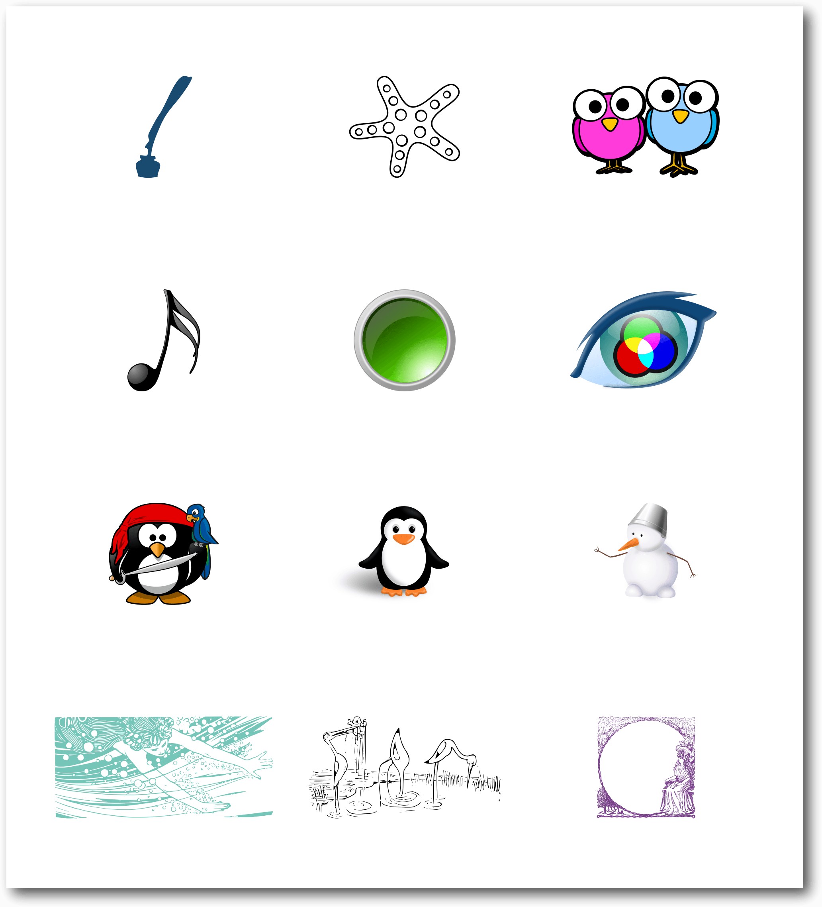Von einfachen Objekten über Buttons/Icons mit Farbverläufen bis hin zu komplexen Bildern mit Schattierungen oder vektorisierten Zeichnungen und noch vieles mehr lässt sich mit einer Vektorgrafik darstellen.
Animationen
Mit Anwendungen wie sozi [14], Inkscape-Erweiterungen wie JessyInk oder verschiedenen JavaScript-Bibliotheken können Animationen oder Präsentationen erzeugt werden, die man sich im Webbrowser anschauen kann. Auch die Auszeichnungssprachen CSS oder SMIL können zum Animieren von SVG-Bildern verwendet werden. Eine Einführung zum Thema gibt es auf der Inkscape-Webseite [15].Plotter, Schneidemaschinen & Co.
Viele Leute nutzen Inkscape gar nicht so sehr zum Erstellen von hübschen Grafiken, sondern um damit physische Gegenstände zu fräsen, automatisch auszuschneiden, zu bemalen etc. So kann man Inkscape (mittels Erweiterungen) unter anderem auch dazu verwenden, Folienschneidemaschinen anzusteuern oder Holzdekore mit einem Laser einzubrennen. Auch zum Bemalen von Eiern soll es sich hervorragend eignen. 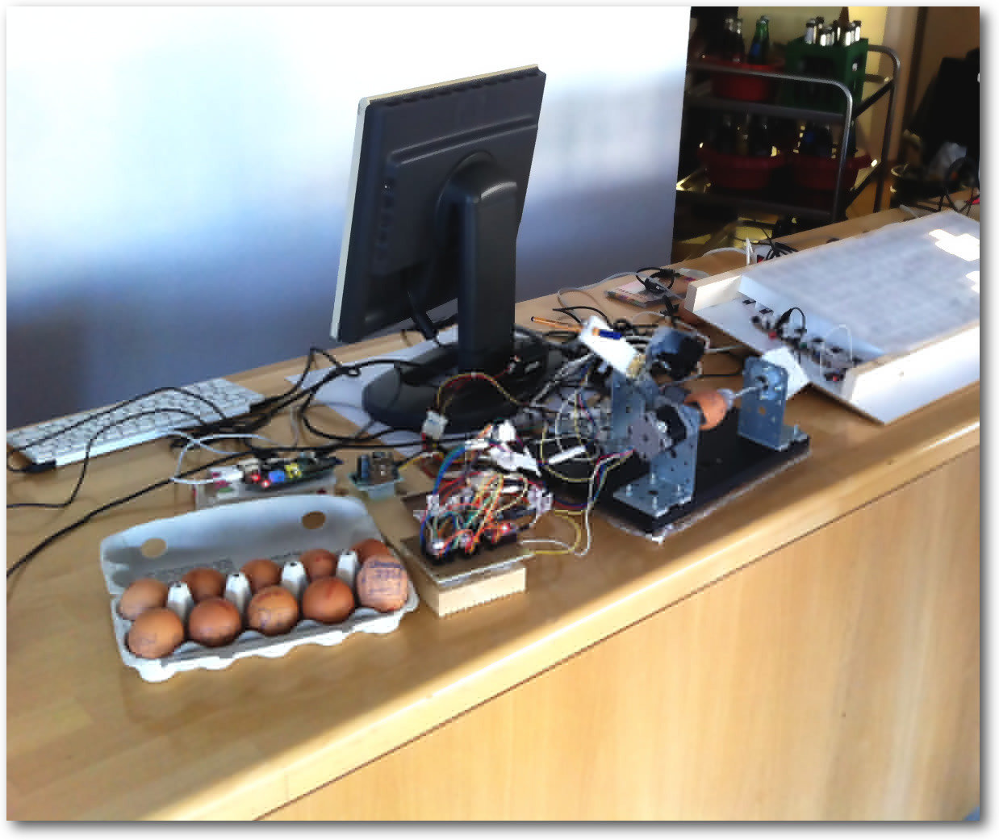Eierbemalen mit dem Eggbot, gcodetools und Inkscape.
Vorbereitung für den nächsten Teil
In diesem (zugegebenermaßen sehr theoretischen) Artikel wurden die Grundlagen für das Verständnis von Vektorzeichnungen gelegt. Diese helfen dabei, sich bei der Arbeit in Inkscape nicht von den Unterschieden zur gewohnten Rastergrafik beziehungsweise Fotobearbeitung verwirren zu lassen. Wer in der nächsten Folge dieser Serie dann selber seine ersten Schritte in Inkscape wagen möchte, sollte, falls noch nicht geschehen, Inkscape installieren. Die aktuelle Version (0.91, Stand März 2016) kann kostenlos für Windows und Mac OS X von der Inkscape-Webseite heruntergeladen [16] werden. Für Linux-Distributionen gibt es auf der Webseite den Quellcode [16], und auf Launchpad ein ppa [17] für Ubuntu und seine Derivate. Einige Linuxdistributionen (aber längst nicht alle, z. B. gibt es bei Ubuntu 14.04 noch die Version 0.48.4 von 2012) stellen die aktuelle Version auch als Paket in ihrem Repository zur Verfügung. Sollten bei der Installation Probleme auftreten, ist es ratsam, sich zunächst noch einmal ganz genau die Anweisungen auf der Download-Seite durchzulesen (insbesondere, falls man Mac OS X verwendet). Falls dieses nicht ausreicht und auch eine Suche im Internet keine nützlichen Hinweise bringt, kann man auch in einem Inkscape-Forum [8], im Chat [8] oder auch in der Fragen-und-Antworten-Abteilung [18] auf Launchpad um Hilfe bitten. Links[1] http://vektorrascheln.de/posts/2015/Dec/inkscape-fuer-einsteiger-teil-i-grundlagen.html
[2] https://inkscape.org/de/
[3] http://bazaar.launchpad.net/%7Einkscape.dev/inkscape/trunk/files
[4] https://de.wikipedia.org/wiki/GNU_General_Public_License
[5] https://inkscape.org/de/mitmachen/
[6] https://inkscape.org/*board
[7] http://sfconservancy.org/
[8] https://inkscape.org/de/community/
[9] http://gimp.org/
[10] http://krita.org/
[11] http://www.w3.org/
[12] https://inkscape.org/gallery/
[13] https://openclipart.org/
[14] http://sozi.baierouge.fr/
[15] https://inkscape.org/de/lernen/animation/
[16] https://inkscape.org/de/herunterladen/
[17] https://launchpad.net/inkscape.dev/+archive/ubuntu/stable
[18] https://answers.launchpad.net/inkscape
| Autoreninformation |
| Maren Hachmann (Webseite) verwendet Inkscape für die Grafiken der Kieler Open Source und Linux Tage. Auf ihrer Webseite vektorrascheln.de veröffentlicht sie in unregelmäßiger Abfolge Artikel und Tutorials zu Inkscape und anderer freier Software. |
Beitrag teilen Beitrag kommentieren
Zum Inhaltsverzeichnis
Emacs – Moderne Antike
von Clemens Radermacher Das ursprünglich von Richard Stallman als Texteditor entwickelte Projekt GNU Emacs ist heute weit vielseitiger einsetzbar als es vermutlich je beabsichtigt war – dank seiner Programmierbarkeit und hervorragenden Integration mit Linux. Der folgende Artikel soll einen Überblick dazu vermitteln und die Installation sowie einige Einrichtungsmöglichkeiten vorstellen.Einführung
Schon seit über 30 Jahren wird die Entwicklung von Emacs durch eine aktive Community gestaltet und vorangetrieben [1]. In jüngster Zeit gewinnt das Projekt wieder mehr an Beachtung und im letzten Jahr fand sogar eine Emacs-Konferenz statt [2], auf der sich Nutzer austauschen und kennenlernen konnten. Es handelt sich zwar um einen Editor, darüber hinaus bietet Emacs aber auch eine Art Plattform zur Entwicklung von eigenständigen Anwendungen. Außer graphisch aufwendigeren Programmen lassen sich nahezu alle gängigen Desktop-Programme in Emacs reproduzieren. Ein großer Vorteil andere Anwendungen in Emacs zu integrieren, ist, dass man ein konsistentes Benutzerinterface erhält. So stehen immer dieselben Grundfunktionen zur Verfügung und die Tastenkürzel sowie die Programme selbst sind beliebig konfigurierbar. Emacs wird unter anderem genutzt als:- Entwicklungsumgebung
- Vim Emulator
- Webbrowser
- Music Player
- PDF Viewer
- Dateimanager
- Organizer
- Terminal Emulator
- Feedreader
- Email Client
- IRC Client
- Notizverwaltung
- Static Site Generator
Installation
Bei vielen Distributionen ist Emacs bereits vorinstalliert, andernfalls wird man mit großer Wahrscheinlichkeit in der distributionseigenen Paketverwaltung fündig. Möchte man die aktuelle Emacs-Version nutzen und nicht auf ein Update über die Paketverwaltung warten, empfiehlt es sich, die manuelle Installation über das Archiv der offiziellen Homepage des GNU-Projekts [1] vorzunehmen. Aktuell ist die neueste Version 24.5, welche sich über folgende Befehle herunterladen und entpacken lässt:$ wget http://ftpmirror.gnu.org/emacs/emacs-24.5.tar.gz
$ tar xzvf emacs-24.5.tar.gz
Um Emacs zu kompilieren, folgt man am besten den Hinweisen der Datei INSTALL,
in der auch die Abhängigkeiten aufgelistet sind. Unter Debian-basierten Systemen
lassen sich die Abhängigkeiten leicht mit den folgenden Befehlen abhandeln:
$ tar xzvf emacs-24.5.tar.gz
# apt-get install build-essential
# apt-get build-dep emacs24
Für Distributionen, welche den Paketmanager yum verwenden, gibt es das Tool
yum-builddep [13]
# apt-get build-dep emacs24
# yum-builddep emacs24
Der eigentliche Kompiliervorgang erfolgt dann mit den gewohnten Befehlen:
$ ./autogen.sh
$ ./configure
$ make
# make install
$ ./configure
$ make
# make install
Erste Schritte
Beim ersten Start hinterlässt Emacs wahrscheinlich einen relativ unspektakulären Eindruck und die Funktionalität lässt zunächst tatsächlich zu wünschen übrig. Auch wenn viele nützliche Pakete bei der Standardinstallation bereits integriert sind, werden diese nämlich nicht automatisch aktiviert. 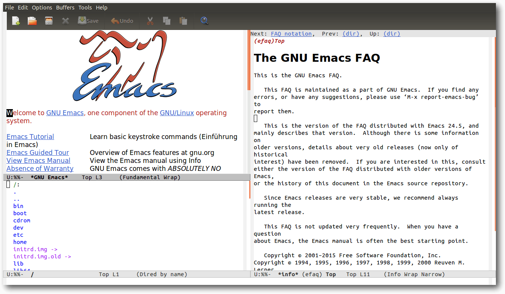Emacs nach dem Start.
Dies hängt unter anderem damit zusammen, dass die Emacs-Entwickler dem Nutzer so wenig Vorgaben wie möglich machen möchten, auf welche Art er Emacs nutzt. Böse Zungen behaupten aber auch, die Standardeinstellungen sind gezielt so einfach gehalten, damit man dazu gezwungen sei, Emacs Lisp zu lernen. Dieses Konzept geht auch ganz gut auf, denn hat man sich erst mal durch die Grundeinstellungen gekämpft und einige Anpassungen getroffen, ist man mit den Grundzügen von Emacs bereits etwas vertrauter und schreckt vielleicht vor etwas Emacs Lisp Code nicht mehr so schnell zurück wie am Anfang. Wer möchte, kann auch eine der populäreren Konfigurationen aus dem Netz verwenden, was für Anfänger aber zunächst eine Überforderung bedeuten könnte [14] [15] [16]. Es ist daher empfehlenswert, sich zu Beginn erst einmal eine eigene Konfigurationsdatei anzulegen. Dazu erstellt man in seinem Homeverzeichnis eine Datei namens .emacs. In dieser Datei kann man den Emacs Lisp Code hinterlegen, der beim Programmstart ausgeführt wird. Das offizielle Paketarchiv GNU Elpa ist bereits in den Quellen vorhanden. Darüber hinaus gibt es aber viele Erweiterungen, die dort nicht verfügbar sind. Diese finden sich in der Regel im Community betriebenem Melpa-Archiv [17]. Um Melpa zu den Paketquellen hinzuzufügen, trägt man folgenden Code in die eben erstellte Konfigurationsdatei ein:
;; Kommentare beginnen mit einem Semikolon
;; Diese Anweisung lädt das Paket "package", welches die Paketverwaltung in
;; Emacs bereitstellt. Das ist nötig, um im nächsten Abschnitt die
;; Archivquellen anzupassen.
(require 'package)
;; Die Paketquellen sind in der Variable "package-archives" gespeichert.
;; Zu dieser Liste fügt man mit folgender Anweisung das Melpa-Archiv hinzu.
(add-to-list 'package-archives
'("melpa" .
"https://melpa.org/packages/"))
Nun kann man Emacs starten und Pakete installieren. Eine nennenswerte
Empfehlung für den Einstieg ist das
better-defaults-Paket, welches einige sinnvolle Grundeinstellungen vornimmt.
Durch Drücken von „Alt“ + „X“ ruft man dazu eine
Kommandozeile für Emacs-Befehle auf. Hier gibt man den
Befehl package-install ein und bestätigt mit „Enter“. Danach ist der
gewünschte Paketname anzugeben, z. B. better-defaults. Sobald
man mit „Enter“ bestätigt hat, wird das Paket heruntergeladen und installiert.
Das sich darauf öffnende Fenster kann man zunächst ignorieren und durch
Drücken der Taste „Q“ wieder schließen.
Bevor man nun eifrig beginnt weitere Pakete zu installieren, sollte man
versuchen, mehr über den Umgang mit Emacs zu lernen. Zum Glück gibt es
hierzu
zahlreiche, informative Tutorials im Internet zu entdecken [18] [19] [20] [21] [22] [23] [24] [25] [26].
Links;; Diese Anweisung lädt das Paket "package", welches die Paketverwaltung in
;; Emacs bereitstellt. Das ist nötig, um im nächsten Abschnitt die
;; Archivquellen anzupassen.
(require 'package)
;; Die Paketquellen sind in der Variable "package-archives" gespeichert.
;; Zu dieser Liste fügt man mit folgender Anweisung das Melpa-Archiv hinzu.
(add-to-list 'package-archives
'("melpa" .
"https://melpa.org/packages/"))
[1] https://www.gnu.org/software/emacs/
[2] http://emacsconf2015.org/
[3] http://www.howardism.org/Technical/Emacs/new-window-manager.html
[4] https://www.youtube.com/watch?v=TgHvRcbYJ-8
[5] https://www.youtube.com/watch?v=KZjFVdU8VLI
[6] https://www.youtube.com/watch?v=4tyTgyzUJqM
[7] https://vimeo.com/22798433
[8] http://martinfowler.com/bliki/InternalReprogrammability.html
[9] https://www.youtube.com/watch?v=XjKtkEMUYGc
[10] https://www.youtube.com/watch?v=dljNabciEGg
[11] http://emacsrocks.com/
[12] http://www.parens-of-the-dead.com/
[13] http://linux.die.net/man/1/yum-builddep
[14] http://batsov.com/prelude/
[15] http://spacemacs.org/
[16] http://eschulte.github.io/emacs24-starter-kit/
[17] https://melpa.org
[18] http://emacslife.com/
[19] http://caiorss.github.io/Emacs-Elisp-Programming/
[20] https://www.masteringemacs.org/
[21] http://david.rothlis.net/emacs/howtolearn.html
[22] http://ergoemacs.org/emacs/emacs.html
[23] https://tuhdo.github.io/index.html
[24] http://www.ibm.com/developerworks/views/aix/libraryview.jsp?search_by=emacs+editing+environment
[25] https://www.youtube.com/playlist?list=PLxj9UAX4Em-IiOfvF2Qs742LxEK4owSkr
[26] https://www.youtube.com/playlist?list=PL3kg5TcOuFlrtDZoA4PmvRqvsRLo8bbI7
| Autoreninformation |
| Clemens Radermacher nutzt Emacs seit ca. zwei Jahren unter anderem zur Programmierung und arbeitet gerne mit Freier Software. |
Beitrag teilen Beitrag kommentieren
Zum Inhaltsverzeichnis
VirtualBox 5.0 – Der Einstieg
von Holger Reibold Wer kennt das nicht? Man hört von einer interessanten Anwendung oder Umgebung, die man gerne einmal ausprobieren möchten. Doch leider stellt sich dann bei näherer Betrachtung heraus, dass man über keine Plattform verfügt, mit der man die Anwendung evaluieren könnte. Wer schon immer mal ohne Bauchschmerzen eine bestimmte Server-Komponente auf ihre Praxistauglichkeit hin testen oder sich einmal in Sicherheitswerkzeuge wie Nmap oder Wireshark einarbeiten wollte, ohne das geeigneten Netzwerk zu haben, für den ist VirtualBox [1] die ideale Lösung. In Unternehmen gehören Virtualisierungstechniken längst zum Alltag, weil man damit nicht nur schnell und einfach bestimmte Systeme testen, sondern insbesondere weil man bestehende Hardware optimal ausnutzen kann. Aber auch im Privaten ist die Verwendung solcher Tools sinnvoll. Mit VirtualBox steht eine quelloffene Lösung zur Verfügung, die eine beachtliche Bandbreite an Möglichkeiten bietet. Der Name VirtualBox ist dabei Programm, denn man kann mit einer Virtualisierungsumgebung wie VirtualBox auf einem Standard-PC nicht nur andere Betriebssystemplattformen simulieren, sondern sogar ganze Netzwerke realisieren. Das Tolle an VirtualBox: Man kann damit eine andere Rechnerplattform simulieren. Ein 32-Bit PC kann mit Hilfe von VirtualBox in eine 64-Bit-Plattform verwandelt werden. Außerdem kann man auf einem Rechner mehrere verschiedene Betriebssysteme ausführen. Man kann in verschiedenen virtuellen Maschinen beispielsweise Windows und Linux-Betriebssysteme ausführen. So verwandelt man einen Windows-Rechner in ein vollwertiges Linux-System oder führt auf einem Linux einen Windows-Server aus. Theoretisch kann man beliebig viele virtuelle Systeme, man spricht üblicherweise von virtuellen Maschinen, kurz VM, ausführen. Einzig die Rechnerkapazität bestimmt die Anzahl der ausführbaren Maschinen. VirtualBox ist so leistungsfähig, dass man sogar vollständige Clouds auf einem einzigen Rechner anlegen kann. 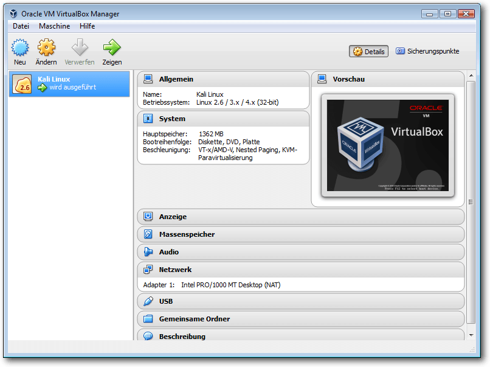Ein erster Blick auf VirtualBox 5.0.
Alles Wichtige über VirtualBox auf einen Blick
Nun stellt sich unmittelbar die Frage, welches die praktischen Einsatzszenarien für VirtualBox sind. Einer der wichtigsten Anwendungsbereiche ist bereits genannt worden: Die Ausführung von verschiedenen Betriebssystemen auf einem einzigen Rechner. Damit bieten sich die verschiedensten Anwendungsmöglichkeiten. Man kann auf einem Windows-Rechner beispielsweise Anwendungen ausführen, die ansonsten eine andere Rechnerarchitektur verlangen würden. Das ist praktisch und kostensparend, weil man auch ohne einen zweiten Rechner direkt loslegen kann. Gerade im Enterprise-Umfeld gehen immer mehr Software-Entwickler dazu über, ihre Umgebungen als sogenannte Appliance anzubieten. Auf diesem Weg kann man vorkonfigurierte Installationen mit wenigen Mausklicks einrichten – ein Segen für Entwickler und Anwender gleichermaßen. Besonders einfach kann man auf diesem Weg vollständige Betriebssysteminstallationen sichern und wiederherstellen. VirtualBox erlaubt es, von Installationen sogenannte Schnappschüsse zu erzeugen, in denen ein bestimmter Zustand festgehalten und dann eingefroren wird. Man kann diesen Zustand jederzeit wieder auflösen. Einer der zentralen Vorteile von VirtualBox: Man kann die vorhandene Hardware optimal ausnutzen und somit die Kosten für Computer (und damit auch für den Stromverbrauch) erheblich senken. In vielen Umgebungen werden jede Menge Ressourcen vergeudet, die man dank einer Virtualisierungslösung effektiv nutzen könnte. Wenn man konkret mit dem Gedanken spielt, eine Virtualisierungsumgebung einzufügen – und sei es nur zu Testzwecken – so sollte man sich zunächst ein wenig mit der Terminologie befassen. Es sind nur einige wenige Begriffe, aber die und deren Bedeutung müssen sitzen. Das „Host-Betriebssystem“, oder einfach nur als Host bezeichnet, ist das System, auf dem die VirtualBox-Installation ausgeführt wird. Es handelt sich dabei um einen physischen Computer, auf dem ein bestimmtes Betriebssystem ausgeführt wird, das dann als Grundlage für die Ausführung einer VirtualBox-Installation dient. VirtualBox kann auf Linux, Mac OS X, Windows und Solaris ausgeführt werden. Die Unterschiede zwischen den verschiedenen VirtualBox-Varianten sind dabei minimal. Der Gast, man spricht auch vom „Gast-Betriebssystem“ oder Guest OS, wird innerhalb einer virtuellen Umgebung ausgeführt, die von dem Host bereitgestellt wird. VirtualBox kann verschiedene Plattformen simulieren und so die Ausführung aller gängigen Betriebssysteme ermöglichen. Man kann auf einem Host beispielsweise Windows-, Mac OS X-, Linux-, FreeBSD- und OpenBSD-basierte Systeme ausführen – auch gleichzeitig verschiedene oder mehrere eines Typs. Der Begriff der virtuellen Maschine, kurz VM, ist bereits mehrfach gefallen. Dabei handelt es sich um eine spezielle Umgebung, die der VirtualBox-Host für den Gast erzeugt und bereitstellt. Man kann sich den Gast auch als einen Computer im Computer vorstellen. Normalerweise wird diese VM auf dem Desktop-Rechner angezeigt, aber auch ein Remote-Zugriff ist möglich. In einer VM sind verschiedene Parameter hinterlegt, die die Rahmenbedingungen für die Ausführung des Gastes bestimmen. Dabei handelt es sich beispielsweise um die Größe der Gast-Partition, den Prozessortyp, die RAM-Größe, die Netzwerkkonfiguration und vieles mehr. Die Eigenschaften einer VM werden über den VirtualBox Manager konfiguriert, können aber auch über die Konsole manipuliert werden. Ein weiterer wichtiger Begriff sind die „Virtualbox Guest Additions“ – oder zu Deutsch Gasterweiterungen. Diese Erweiterungen werden beispielsweise benötigt, um die Performance des Gastes zu optimieren. Oder wenn man Windows 10 in VirtualBox installieren möchte, benötigt man ebenfalls eine solche Erweiterung, denn erst sie schaltet zusätzliche Funktionen der virtuellen Maschine frei, etwa das Erstellen gemeinsamer Ordner, die gemeinsame Zwischenablage und erweiterte Grafikkarten-Treiber. VirtualBox kann auf verschiedensten 32- und 64-Bit-Hostsystemen ausgeführt werden. Die Software übernimmt dabei die Rolle des sogenannten Hosted Hypervisors [2]. Man spricht auch gelegentlich von einem Hypervisor Typ 2 – im Unterschied zum Hypervisor Typ 1 (bare metal), der direkt auf der Hardware ausgeführt wird. Die Unterschiede zwischen VirtualBox auf Linux, Windows oder einem anderen Betriebssystem sind minimal. Der Vorteil davon ist: Man kann virtuelle Maschinen auf einer Plattform X erstellen, dort exportieren und diese dann in der Regel problemlos auf einer Plattform Y wieder importieren. Dabei kommt insbesondere das Open Virtualization Format (OVF) zum Einsatz, das auch von anderen Virtualisierungsumgebungen unterstützt wird. VirtualBox kann einer VM theoretisch bis zu 32 Prozessoren zuweisen. Dadurch ergeben sich beachtliche Möglichkeiten. VirtualBox unterstützt alle gängigen Hardwarekomponenten, USB, ACPI, iSCSI und mehrere Bildschirme. Eine weitere Besonderheit ist die VM-Gruppenfunktion. Damit kann man mehrere Benutzer und VMs organisieren und verwalten. Auch das Stichwort Remote-Zugriff ist bereits gefallen. Die sogenannte VirtualBox Remote Desktop Extension, kurz VRDE, erlaubt den Fernzugriff auf beliebige virtuelle Maschinen. Diese Erweiterung unterstützt auch das von Microsoft entwickelte Remote Desktop Protocol (RDP).VirtualBox 5.0 in Betrieb nehmen
VirtualBox 5.0 kann auf den verschiedensten Systemen ausgeführt werden. Dabei kann man auch ein wenig angestaubte Rechner reaktivieren und diese als Ausführungsumgebung für die eine oder andere Lösung verwenden, beispielsweise als NAS- oder Backup-Server. Laut dem Entwicklerteam kann VirtualBox 5.0 unter folgenden Linux-Betriebssystemen eingesetzt werden [3]:- Ubuntu 12.04, 14.04 und 15.10
- Debian GNU/Linux 6.0 (Squeeze), 7.0 (Wheezy) und 8.0 (Jessie)
- openSUSE 13.1, 13.2 und 42.1
- SUSE Linux Enterprise Server 11
- Fedora 18 bis 23
- Oracle Linux 5, 6 und 7
- Redhat Enterprise Linux 5, 6 und 7
- CentOS 5, 6 und 7
$ chmod +x ./VirtualBox.run
# ./VirtualBox.run install
Man muss anschließend nur noch die VirtualBox-Gäste der Gruppe
vboxusers hinzufügen:
# ./VirtualBox.run install
# usermod -a -G vboxusers benutzername
Erste Schritte
Unabhängig davon, auf welchem Betriebssystem man VirtualBox installiert, wird immer ein Menüeintrag bzw. eine Verknüpfung zu dem ausführbaren Programm erzeugt. Die VirtualBox-Benutzerschnittstelle ist einfach aufgebaut. Unterhalb der Menü- und Symbolleiste befinden sich links die Liste der angelegten virtuellen Maschinen, rechts die Einstellungen eines markierten VM-Eintrags. Um das Erstellen von virtuellen Maschinen so einfach wie möglich zu machen, stellt VirtualBox einen Assistenten zur Verfügung. Um eine virtuelle Maschine anzulegen, klickt man in der VirtualBox-Symbolleiste auf die Schaltfläche „Neu“. Hiermit weist man der neuen virtuellen Maschine in Eingabefeld „Name“ eine Bezeichnung zu. Wenn man eine Bezeichnung verwendet, die sich mit einer unterstützten VM-Umgebung deckt, füllt der Assistent die beiden darunterliegenden Felder aus. Gibt man beispielsweise die Buchstaben „Li“ von „Linux“ ein, nimmt der Assistent an, dass man ein Linux-System anlegen möchte. Nach der Angabe der Bezeichnung bestimmt man den Typ und die Version. Das Auswahlmenü „Version“ stellt alle unterstützten Betriebssystemvarianten zur Verfügung. Mit „Weiter“ gelangt man zum zweiten Schritt. Wenn man bereits ein wenig mit VirtualBox und den möglichen VM-Einstellungen vertraut ist, kann man anstelle der geführten Installation auch den Experten-Modus verwenden. Dieser stellt eine Übersicht der möglichen Konfigurationseinstellungen zur Verfügung. Für den Moment folgt man dem Assistenten. 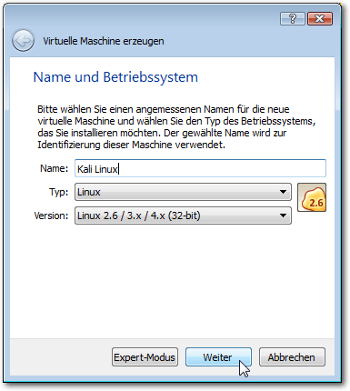Der erste Schritt des VM-Assistenten.
Mit einem Klick auf „Weiter“ gelangt man zum zweiten Schritt. Der dient der Konfiguration der RAM-Speichergröße. Dazu steht ein Schieberegler zur Verfügung. VirtualBox schlägt einen Wert vor, den man oben verändern kann, wenn das Host-System über ausreichend Speicher verfügt. Man muss dabei darauf achten, dass man dem Host-System weiterhin genug RAM lässt, damit dieses für alle weiteren Aufgaben genug Speicher besitzt. Mit einem Klick auf „Weiter“ öffnet man den dritten Dialog. In diesem weist man den virtuellen Maschine eine Festplatte zu. VirtualBox generiert standardmäßig für jede virtuelle Maschine eine neue Festplatte und weist dieser automatisch eine empfohlene Größe zu. Diese Größe kann nachträglich jederzeit geändert werden. Alternativ kann man auch eine bestehende oder keine Festplatte verwenden. Mit einem Klick auf „Erzeugen“ öffnet man den Auswahldialog für den Dateityp der Festplatte. Mit VirtualBox 5.0 können folgende Typen erzeugt werden:
- VDI – VirtualBox Disk Image
- VMDK – Virtual Machine Disk
- VHD – Virtual Hard Disk
- HDD – Paralells Hard Disk
- QED – QEMU Enhanced Disk
- QCOW – QEMU Copy-on-Write
Die Konfiguration einer virtuellen Festplatte.
Im nächsten Dialog bestimmt man die Bezeichnung der virtuellen Maschine und deren Größe. Über einen Schieberegler kann man wieder die Größe ändern. In der Regel ist es sinnvoll, die Voreinstellungen zu übernehmen und dann im laufenden Betrieb gegebenenfalls die notwendigen Änderungen und Anpassungen vorzunehmen. Damit hat der VM-Assistent alle notwendigen Informationen und kann die VM entsprechend den gewünschten Einstellungen erzeugen. Dann klickt man abschließend auf „Erzeugen“, damit VirtualBox die Konfiguration anlegt.
VM ausführen
Nachdem man die erste virtuelle Maschine angelegt hat, ist diese sozusagen startklar. Es wundert manchen Anwender womöglich, dass man mit dieser VM noch kein Betriebssystem verknüpft ist. Das kommt erst beim ersten Start der Umgebung, denn dabei kann man ein Installationsmedium angeben. Um eine VM-Konfiguration zu starten, klickt man in der Übersicht doppelt auf den gewünschten Eintrag. Alternativ kann man über die Schaltfläche „Start“ einen normalen Start, einen ohne GUI und den sogenannten abgekoppelten Start ausführen. Man verwendet hier die normale Startvariante und startet die oben angelegte VM. Nach einem Moment präsentiert der Dialog die Auswahl des Installationsmediums. VirtualBox geht standardmäßig davon aus, dass sich das Medium in einem CD-/DVD-Laufwerk befindet. Sollten man das System von einer heruntergeladenen ISO-Datei installieren, wechselt man zu dem Download-Ordner und wählt das Image aus. Man klickt anschließend auf die Schaltfläche „Starten“, um die Installation der virtuellen Maschinen einzuleiten. In der VM-GUI kann man den Installationsvorgang verfolgen und ausführen. VirtualBox und die angelegten virtuellen Maschinen nutzen natürlich die Tastatur und die Maus. Der Host und die Gäste teilen sich diese Geräte. Wenn man mit der Maus in die VM klickt, fängt diese die Maus sozusagen ein. Um die Maus wieder für den Host freizugeben, verwendet man den sogenannten Host Key. In der Statuszeile der VM-GUI wird das Kürzel angezeigt. Abhängig vom verwendeten Host-Betriebssystem kann man verschiedene Tastenkombinationen verwenden. 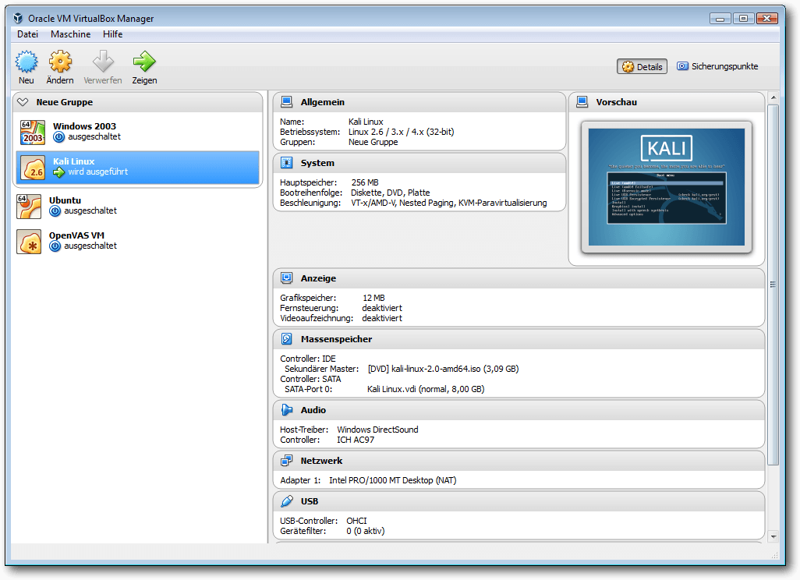Mehrere virtuelle Maschinen sind in VirtualBox angelegt, eine wird ausgeführt.
Fazit
Mit VirtualBox 5.0 steht eine tolle Virtualisierungsumgebung zur Verfügung, die die Ausführung von beliebigen Betriebssystemen auf einem Standardrechner erlaubt. Die Umgebung ist derart flexibel und leistungsfähig, dass sie nicht nur im Privaten, sondern auch im Unternehmenseinsatz eine gute Figur macht. Links[1] https://www.virtualbox.org/
[2] https://de.wikipedia.org/wiki/Hypervisor
[3] https://www.virtualbox.org/wiki/Linux_Downloads
[4] https://www.virtualbox.org/wiki/Downloads
| Autoreninformation |
| Holger Reibold (Webseite) promovierte in Informatik und begann in den 1990ern seine Karriere als Fachjournalist und Autor. Er veröffentlichte seitdem zahlreiche Artikel und Bücher. 2005 gründete er den Verlag Brain-Media.de. Dort hat er auch ein Buch „VirtualBox 5.0 kompakt“ mit weiterführenden Informationen zu VirtualBox herausgegeben. |
Beitrag teilen Beitrag kommentieren
Zum Inhaltsverzeichnis
Pacman – Der Paketmanager von Arch Linux
von Jakob Moser Einer der großen Vorzüge der Linux-Distribution Arch Linux [1] ist ihr Paketmanager „Pacman“ [2] und seine Buildtools. Trotz der sehr umfangreichen und vielfältigen Paketauswahl ist Pacman schnell und einfach zu bedienen. Dieser Artikel erläutert das Konzept und zeigt, wie man mit Pacman Pakete suchen, installieren und entfernen kann.Die offiziellen Repositorys
Die offiziellen Repositorys von Pacman sind „core“, „extra“ und „community“ sowie „multilib“ und „testing“, „community-testing“ und „multilib-testing“. Diese unterscheiden sich neben den Anforderungen, die an ihre enthaltenden Pakete gestellt werden, auch noch in der verwaltenden Nutzergruppe. Die Arch-Linux-Entwickler unterhalten die beiden Repositorys „core“ und „extra“. „core“ enthält die Anwendungen, die benötigt werden, um den Rechner zu starten, ihn mit dem Internet zu verbinden, Pakete zu erstellen, Dateisysteme zu reparieren und das System aufzusetzen. Das Repository hat sehr strenge Qualitätsrichtlinien. Programme, die in „core“ aufgenommen werden sollen, müssen gut getestet werden und Updates müssen einzeln genehmigt werden. „extra“ enthält Pakete, die nicht in „core“ passen, wie zum Beispiel den X-Window-Server, Fenster-Manager, Desktopumgebungen, Web-Browser, Mediaplayer, Office-Suiten und Programmiersprachen-Interpreter wie Java, Ruby oder Python. Die vertrauten Nutzer („Trusted Users“ [3]) verwalten das Repository „community“. Es enthält Pakete aller Art, die die vertrauten Nutzer aufgenommen haben, wie zum Beispiel Schriftarten, Spiele, Hintergrundbilder, Seiten aus dem Arch-Wiki, um sie auch offline zu verwenden, aber auch „Ernsthafteres“, wie das Cairo-Dock, die C++ GTK Utils, andere Programmiersprachen und weitere Desktop-Umgebungen (wie zum Beispiel Cinnamon). Diese Repositorys bilden zusammen mit dem Repository „multilib“ (32-Bit-Programme und Bibliotheken, die auf 64-Bit-Systemen mangels Komplement installiert werden können, wie Skype oder Wine) und den drei „testing“-Repositorys (enthalten instabile Pakete und Pakete, die in „core“ aufgenommen werden sollen), die sogenannten „Offiziellen Repositorys“ [4]. Die offiziellen Repositorys enthalten, wie schon oben angedeutet, eine Vielzahl an Programmen – und zwar immer in ihrer aktuellsten Version. Wird ein neues Release eines Programms veröffentlicht, ziehen die Repositorys schon nach ein paar Tagen nach (jeder Anwender muss sich natürlich selbst überlegen, ob das Konzept des Rolling-Releases für seinen Einsatzzweck das passende ist).Das AUR
Ein Trumpf des Arch-Paketsystems wurde bis jetzt außer Acht gelassen, nämlich das sogenannte „Arch User Repository“ oder kurz „AUR“ [5]. Im Gegensatz zu den offiziellen Repositorys, die nur vertraute Nutzer oder Arch-Entwickler bestücken dürfen, darf hier jeder nach einer Registrierung Paketbeschreibungen hochladen. Diese sogenannten „PKGBUILD“-Dateien [6] sind Shell-Skripte, die alle nötigen Informationen enthalten, um ein Paket mit dem Arch Build System [7] zu erzeugen. Dieses erzeugte Paket erhält dann alle für die Installation relevanten Daten (Binärdaten, Medien) sowie die Paketinformation (Abhängigkeiten, Name, etc.) nun im PKINFO-Format (dieses sieht der PKBUILD recht ähnlich, ist aber trotzdem etwas anders aufgebaut). Oft enthält der Tarball mit der PKGBUILD (den man von der AUR-Seite herunterladen kann) auch noch andere benötigte Dateien, meist aber nicht den Quelltext. Dieser wird beim Buildvorgang dann von „makepkg“ beispielsweise von einem Git-Repository heruntergeladen und kompiliert. Mit den eingebauten Tools von Arch Linux ist eine Installation von solchen Paketen relativ leicht. Man sucht das gewünschte Paket über die AUR-Weboberfläche [8], lädt sich den Tarball herunter, extrahiert ihn und führt makepkg aus, das die ganze restliche Arbeit (Code herunterladen, Abhängigkeiten auflösen, kompilieren, Paket erzeugen und installieren) in einem Durchgang erledigt. Einen offiziellen, noch einfacheren Weg wird es laut Arch Wiki nicht geben, da so von Nutzern, die etwas aus dem AUR installieren wollen, ein gewisser Kenntnisstand, wie zum Beispiel die Fähigkeit, nützliche von schädlichen Paketen zu trennen, vorausgesetzt wird. Es gibt jedoch einige inoffizielle Wrapper wie „yaourt“, das nicht nur Pacman bedienen kann, sondern auch den AUR-Installationsprozess automatisiert, sodass dieser so einfach ist wie eine Paketinstallation aus den offiziellen Repositorys. Auch das Update von Paketen aus dem AUR läuft dann mit einem Befehl ab. Durch dieses Konzept, das jedem, der Pakete erstellen will, eine Chance gibt, das auch – zumindest in eingeschränkter Weise – zu tun, verfügt Arch Linux über eine beeindruckend große Menge an Paketen. Gefühlt gibt es ein Paket für jedes freie oder unfreie kostenlose, unter Linux lauffähige Programm in der aktuellsten Version.Bedienung
Die hier gezeigten Befehle nutzen nur die offiziellen Repositorys als Grundlage. Zur Installation von Paketen aus dem AUR kann „yaourt“ installiert werden; mehr dazu später.Suchen von Paketen
Der Befehl$ pacman -Ss Query
sucht nach dem Wort Query in den Namen, Kurzbeschreibungen und
Beschreibungen der Pakete aus den offiziellen Repositorys. Ausgegeben wird dann
eine Liste mit Treffern, jeder im Format Repository/Paketname, Version und einer
Kurzbeschreibung.
Es können auch mehrere Abfragen (dann im Format Query1 Query2 … QueryN)
gemacht werden, um die Trefferliste zusätzlich zu filtern.
Installieren von Paketen
Mit dem Befehl# pacman -S Paketname
wird das Paket Paketname mit allen seinen Abhängigkeiten installiert.
Werden – mit Leerzeichen getrennt – mehrere Paketnamen angegeben, werden alle
diese Pakete installiert.
Dieser Befehl installiert ein bereits heruntergeladenes und erzeugtes
(Binär-)Paket:
# pacman -U paketname.pkg.tar.xz
Entfernen von Paketen
Um das Paket Paketname (ohne mit installierte Abhängigkeiten) zu entfernen, wendet man folgenden Befehl an:# pacman -R Paketname
Zur Entfernung von Paket Paketname und allen Abhängigkeiten, die nicht mehr
von anderen Paketen benötigt werden, dient der folgende Befehl:
# pacman -Rs Paketname
Man kann das Paket Paketname entfernen, auch wenn andere Pakete dieses Paket
als Abhängigkeit haben:
# pacman -Rdd Paketname
Das System aktualisieren
Der folgende Befehl aktualisiert zuerst die Paketdatenbanken (dafür sorgt die Option y) und sucht danach nach veralteten Paketen im System. Diese werden darauf aktualisiert (Option u):# pacman -Syu
Die beiden Optionen y und u sollten immer zusammen ausgeführt werden
(sprich: es sollte kein Datenbankupdate durchgeführt werden, ohne dass auch alle
Pakete aktualisiert werden), da es ansonsten aufgrund des
Rolling-Release-Konzepts Probleme mit nicht mehr kompatiblen Abhängigkeiten
geben kann.
Pacman Rosetta
Im Arch-Linux-Wiki gibt es eine Rosetta-Seite [9], die zu Pacman-Kommandos die jeweiligen Äquivalente der Paketmanager apt, dnf, zypper und emerge auflistet. Diese Übersicht gibt insbesondere Ein- und Umsteigern einen ganz guten Überblick, allerdings ist die Seite an einigen Stellen veraltet.Bedienung – Pakete aus dem AUR
Manuelle Installation
Möchte man ein Paket aus dem AUR installieren, sucht man sich zuerst über die AUR-Weboberfläche [8] das gewünschte Paket aus. Danach wählt man rechts auf der Seite „Package Actions -> Download snapshot“ und speichert den Tarball in einem Ordner. Auf einem Terminal wechselt man nun in diesen Ordner, entpackt den Tarball und wechselt in das Verzeichnis der entpackten Dateien:$ cd pfad/zum/tarball
$ tar -xvf paketname.tar.gz
$ cd paketname
Als Nächstes sollte man die entpackten Inhalte und die PKGBUILD darauf prüfen,
ob diese vertrauenswürdig und seriös sind – schließlich kann jeder Pakete in das
AUR einspeisen. Zur Prüfung reicht es normalerweise aus, die URL unter „source“
zu kontrollieren, ob diese zu einer offiziellen (bekannten) Adresse führt –
genau wie man das zum Beispiel unter Ubuntu mit PPAs machen sollte. Möchte man
der PKGBUILD etwas genauer auf den Zahn fühlen, sollte man auch noch die
„build()“ und „install()“-Funktion prüfen. Hat man das überprüft und nichts
gefunden, was zu beanstanden wäre, kann fortgefahren werden.
Mit dem Aufruf von
$ tar -xvf paketname.tar.gz
$ cd paketname
$ makepkg -sri
werden der Quellcode heruntergeladen, die Abhängigkeiten installiert, der
Quellcode kompiliert und das Paket erzeugt und installiert. Die Option s
sorgt für die Installation der Abhängigkeiten, die Option r sorgt dafür, dass
nur zum Erstellzeitpunkt benötigte Abhängigkeiten wieder entfernt werden, und
i sorgt dafür, dass makepkg am Ende der Prozedur das Paket über Pacman
installiert.
Möchte man diese Arbeiten selbst (oder nicht, im Falle von r) erledigen, kann
man die jeweilige Option auch weglassen und die Pacman-Kommandos selbst
ausführen.
yaourt
Wie oben bereits erwähnt, ist yaourt [10] [11] ein Pacman-Wrapper, der nicht nur Pacman, sondern auch das AUR-Repository bedienen kann. yaourt befindet sich nur im AUR, nicht in den offiziellen Paketquellen, was bedeutet, dass man das Paket (sprich: die PKGBUILD-Datei) nach obiger Anleitung herunterladen und installieren muss. yaourt verwendet package-query, ein Tool, das wiederum auch nur im AUR vorhanden ist. Zuerst muss also package-query installiert werden. Dazu lädt man sich über „Package Actions -> Download snaphost“ die package-query-PKGBUILD herunter [12]. Danach wechselt man auf einem Terminal in den Ordner, in dem der Tarball liegt, entpackt ihn und führt mit dem folgenden Befehl das makepkg-Kommando aus:$ tar -xvf pfad/zu/package-query.tar.gz
$ cd package-query
$ makepkg -sri
Makepkg lädt die Quellen herunter und kompiliert sie, danach werden sie
automatisch installiert.
Nun kann man yaourt installieren. Dazu lädt man sich – wie gehabt – über
„Package Actions -> Download snaphost“ das yaourt-Paket
herunter [13].
Auch dieses wird nach obigem Prinzip installiert.
$ cd package-query
$ makepkg -sri
$ tar -xvf pfad/zu/yaourt.tar.gz
$ cd yaourt
$ makepkg -sri
$ cd yaourt
$ makepkg -sri
Bedienung von yaourt
Yaourt kann Pakete sowohl aus den offiziellen als auch aus den inoffiziellen Paketquellen installieren.Suchen und Installieren von Paketen
Mit dem Befehl yaourt Query sucht man zuerst nach Query in den Namen, Kurzbeschreibungen und Beschreibungen der Pakete aus den offiziellen Repositorys und dem AUR. Es können auch mehrere Abfragen (dann im Format Query1 Query2 … QueryN) gemacht werden, um die Trefferliste zusätzlich zu filtern. Die Trefferliste ist im Format: Nummer Repository/Paketname Version Kurzbeschreibung.==> Geben Sie die Nummern der zu installierenden Pakete an […]
==> ----------------------------------------------------------
==>
Obiger Prompt erscheint nach Ausgabe der Treffer.
In das folgende Eingabefeld kann nun aus der Trefferliste die Nummer des Paketes
(oder bei mehreren zu installierenden Paketen die jeweiligen Nummern), das
installiert werden soll, eingegeben werden. Gibt man hier keine Nummer an,
sondern drückt einfach nur „Enter“, werden keine Pakete installiert.
Wie bei Pacman auch können Pakete mittels
==> ----------------------------------------------------------
==>
$ yaourt -S Paketname
installiert werden.
Entfernen von Paketen
Entfernt werden Pakete wie bei Pacman über$ yaourt -R Paketname
Pakete aktualisieren
Der Befehl$ yaourt -Syua
aktualisiert alle Pakete, sowohl aus den offiziellen Repositorys
als auch aus dem AUR.
Links[1] https://wiki.archlinux.de/
[2] https://wiki.archlinux.de/title/Pacman
[3] https://wiki.archlinux.org/index.php/Trusted_Users
[4] https://wiki.archlinux.org/index.php/Official_repositories
[5] https://wiki.archlinux.de/title/Arch_User_Repository
[6] https://wiki.archlinux.org/index.php/PKGBUILD
[7] https://wiki.archlinux.de/title/Arch_Build_System
[8] https://aur.archlinux.org/?setlang=de
[9] https://wiki.archlinux.org/index.php/Pacman/Rosetta
[10] https://github.com/archlinuxfr/yaourt
[11] https://wiki.archlinux.de/title/Yaourt
[12] https://aur.archlinux.org/packages/package-query/
[13] https://aur.archlinux.org/packages/yaourt/
| Autoreninformation |
| Jakob Moser stieg vor einem Jahr von Windows auf Linux um. Er begann mit Ubuntu 14.04, nun nutzt er Arch Linux unter KDE Plasma 5. Paketmanager sind seiner Meinung nach einer der größten Vorteile der meisten Linux-Distributionen. |
Beitrag teilen Beitrag kommentieren
Zum Inhaltsverzeichnis
Rezension: Datenanalyse mit Python
von Jochen Schnelle Seit geraumer Zeit erfreut sich Python auch in der (finanz-) technischen Welt einer gewissen Beliebtheit bei der Analyse von größeren Datenmengen, der Erstellung von Diagrammen und der Durchführung von Berechnungen. Genau diesen Themen widmet sich das Buch „Datenanalyse mit Python“ [1]. Hauptthemen sind dabei die Tools bzw. Python-Module, die hierfür vielfach eingesetzt werden: die erweiterte, interaktive Python-Shell iPython, NumPy für die Durchführung von Berechnungen und effiziente Haltung von Daten, matplotlib zum Erstellen von Diagrammen und Pandas zur Analyse von Daten. Autor des Buchs ist übrigens Wes McKinney, welcher auch der Hauptautor und -Entwickler von Pandas ist. Gute Voraussetzungen also, dass fundiertes Wissen vermittelt wird.Was steht drin?
Zu Anfang des Buchs wird in die Nutzung der interaktiven Python-Shell iPython eingeführt und deren Vorteile gegenüber der Standard Python-Shell aufgezeigt. iPython kommt übrigens auch durchgehend in allen im Buch gezeigt Beispielen zum Einsatz. Das folgende Kapitel stellt NumPy vor; der Schwerpunkt liegt dabei auf NumPy Arrays, dem zentralen Datenobjekt dieses Python-Moduls. Die folgenden Kapitel beschäftigen sich mit Pandas und der Datenanalyse. In vier Kapiteln wird schrittweise in die Möglichkeiten dieses Python-Moduls eingeführt. Themen sind unter anderen das Aufbereiten von Daten, Indizierung, Transformation, Aggregation, Laden aus externen Quellen, Erstellen von Statistiken und vieles mehr. Zu den Themen „Daten aus Zeitreihen“ und „Daten aus der Finanzwelt“ gibt es jeweils ein eigenes Kapitel, welches auf die Besonderheiten dieser Themen fokussiert. Außerdem findet man im Buch noch ein Kapitel zum Plotten und Visualisieren von Daten mit Hilfe von matplotlib. Ein weiteres Kapitel behandelt fortgeschrittene Möglichkeiten, welche NumPy zu bieten hat. Dort wird z. B. erklärt, wie man Einfluss darauf nehmen kann, wie NumPy intern die Daten speichert. Den Abschluss des Buchs bildet ein ca. 50-seitiges Tutorial, welches kurz in Python einführt. Der Schwerpunkt des Tutorials liegt darauf, Einsteigern die Python-Grundlagen zu vermitteln, die nötig sind, um NumPy und Pandas vernünftig nutzen zu können.Wie liest es sich?
Das Buch ist aus dem Englischen übersetzt und liest sich durchweg gut und flüssig. Allerdings wirkt die Übersetzung an einigen Stellen sehr „direkt“ und dadurch etwas steif. Wo nötig hat der Autor Grafiken und Diagramme zur Visualisierung des Gezeigten eingefügt. Alles ist durchweg in Graustufen gedruckt, aber immer gut lesbar.Viele Beispiele
Weiterhin ist es sehr gut, dass der Autor sich nur wenig mit der Theorie aufhält und das Wissen im Buch hauptsächlich anhand von Beispielen demonstriert. Diese sind durchweg kurz, gut gewählt und prägnant, so dass hier beim Lesen immer klar wird, was ein bestimmter Befehl bzw. eine Methode eines Objekts bewirkt. Alle Beispiele sind im Buch abgedruckt, sowohl die Eingaben als auch die Ausgaben. Somit lässt sich problemlos nachvollziehen, was gerade passiert. Außerdem gibt es im Buch mehrere Fallstudien, in denen großen Datenmengen mit Pandas analysiert werden (ein Beispiel sind geleistete Spenden im US-Wahlkampf 2012). Auch hier gibt der Autor die Quelle der Daten (im Internet) an, so dass der interessierte Leser die Daten selber herunterladen und die im Folgenden gezeigten Schritte und Analysen mit Hilfe von Pandas Schritt für Schritt nachvollziehen kann.Zielgruppe
Primäre Zielgruppe des Buchs sind Einsteiger in das Thema Datenanalyse mit Hilfe von Python. Grundsätzlich eignet sich das Buch auch für Python-Neulinge, wenn zuerst die Einführung in Python im Anhang des Buchs gelesen wird – allerdings ist diese zu kurz, um Python umfassend zu erlernen. Wer schon Kenntnisse in NumPy und Pandas hat, findet in dem Buch wahrscheinlich auch einige neue Informationen bzw. Beispiele zur Datenanalyse, dies ist aber nicht der Schwerpunkt und macht einen eher kleinen Teil des Buchs aus.Fazit
Das Buch „Datenanalyse mit Python“ führt fundiert, umfassend und anhand vieler Beispiele in dieses Thema ein. Schwächen bzw. Schwachpunkte gibt es keine, sodass das Buch jedem Interessiertem uneingeschränkt empfohlen werden kann.| Buchinformationen | |
| Titel | Datenanalyse mit Python [1] |
| Autor | Wes McKinney |
| Verlag | O'Reilly, 2015 |
| Umfang | 478 Seiten |
| ISBN | 978-3-96009-000-7 |
| Preis | 39,90 € |
Links
[1] http://www.oreilly.de/catalog/datenanalysemitpythonger/
| Autoreninformation |
| Jochen Schnelle (Webseite) programmiert bevorzugt in Python und hat mit Hilfe des Buchs in NumPy und Pandas „hineingeschnuppert“. |
Beitrag teilen Beitrag kommentieren
Zum Inhaltsverzeichnis
Rezension: R for Dummies
von Jens Dörpinghaus Das Buch „R for Dummies“ [1] von Andrie de Vries und Joris Meys ist 2015 in zweiter Auflage bei Wileys erschienen und hat einen Umfang von 418 Seiten. Es ist ein recht typisches Buch der „... for Dummies“-Reihe. Redaktioneller Hinweis: Wir danken Wiley-VCH für die Bereitstellung eines Rezensionsexemplares. Es wird gleich in der Einleitung festgehalten „We can't guarantee that you'll be a guru if you read this book“, aber es gibt trotzdem eine bemerkenswerte Themenvielfalt im Buch. Rechtfertigt das einen Preis von knapp 30 Euro? Werfen wir also einen genaueren Blick auf den Inhalt.Inhalt
Nach einer Einführung unterteilt sich das Buch in sechs Teile, den Abschluss macht ein gut gefüllter Index. R wird ja allgemein als Sprache zur Lösung von statistischen Problemen wahrgenommen. Wer hierfür eine schnelle Einführung erwartet, wird enttäuscht – erst ab dem 4. Teil wird dieser Aspekt behandelt. So ist der erste Teil eine generelle Einführung – „Getting Started with R Programming“ – und führt auf 41 Seiten langsam und gut lesbar in die Arbeit mit R ein. Der zweite Teil – „Getting Down to Work in R“ – baut darauf relativ zügig auf und vermittelt die Grundzüge der Programmierung in R. Datentypen, Arithmetik, Lesen und Schreiben von Daten, Zeit- und Datumsangaben und (mehrdimensionale) Vektoren sind für fast 100 Seiten Thema. Dabei wird stark darauf geachtet, dem Leser vektorbasiertes Arbeiten schmackhaft zu machen. Zu Recht, kann man doch nur so die Vorteile von R vollends ausschöpfen. Bis Seite 220 geht es im dritten Teil – „Coding in R“ – dann ans Eingemachte: Funktionen, If-Abfragen, Schleifen, Debugging und ein ganzes Kapitel zur Hilfe und zur Dokumentation. Umfangreich, mit Beispielen, aber auch mit wenigen Tiefenbohrungen präsentiert sich dieser Teil. Auf über 100 Seiten kommt dann der vierte Teil – „Making the Data Talk“ – mit den von einigen Lesern vielleicht lang ersehnten Themen Analyse von Daten. Dabei geht es zunächst darum, die Daten nach R zu importieren um sie dann zu verarbeiten bzw. zu manipulieren. Erst dann werden Themen der deskriptiven Statistik behandelt. Der fünfte Abschnitt – „Working with Graphics“ – ist ganz dem Plotten von Grafiken gewidmet. Zunächst mir Bordmitteln, in einem abschließenden Abschnitt auch mit ggplot2. Der letzte Teil – „The Part of Tens“ – wird wiederum nur für ein ausgewähltes Publikum interessant sein: „Zehn Dinge, die man in R machen kann und die man sonst in Excel getan hätte“ oder „Zehn Tipps für den Umgang mit Paketen“. Ein Anhang beschäftigt sich zudem mit der Installation von R und RStudio sowie mit dem für das Buch erstellten rfordummies-Paket.Wie ist es geschrieben?
Was kann man da zu einem „... for Dummies“-Buch sagen? Es ist im gewohnten, leicht lesbaren und manchmal etwas schnoddrigen Duktus dieser Reihe geschrieben. Auch auf Englisch ist es ohne große Sprachkenntnisse einfach zu verstehen. Mit vielen Beispielen, Infoboxen und dem übersichtlichen, wenn auch manchmal chaotischen Satz der Reihe ist das Wesentliche leicht zu erfassen. Die ersten Teile sind klar für Anfänger ohne Programmiererfahrung geschrieben, das Niveau steigt aber gegen Ende stark an. Trotzdem kann man auch als „alter Hase“ immer wieder interessante Anmerkungen finden. Im Vorwort vermerken die Autoren, dass das Werk auch als Nachschlagewerk nutzbar ist.Für wen ist es geschrieben?
So ist das Buch auch für Menschen, die schon mit R arbeiten, als Nachschlagewerk brauchbar. Für absolute Anfänger ist es nur unter der Auflage empfehlenswert, dass sie wirklich R als eine Programmiersprache lernen wollen – sonst ist die Hürde am Anfang doch zu hoch. Auch muss darauf hingewiesen werden, dass dieses Buch keine Statistik vermittelt. Es wird stets davon ausgegangen, dass der Leser weiß, wovon die Rede ist.Fazit
Es ist schwierig ein Fazit zu ziehen, denn die Erwartungen an ein Buch über R sind wohl äußerst verschieden. Möchte man einfach Statistik betreiben, ohne Programmierkenntnisse zu haben, könnte dieses Buch eine Empfehlung sein – zumindest wenn sich der Leser wirklich in die Thematik einarbeiten möchte. Dann aber hat er ein gutes Buch in der Hand, dass ihm bei den ersten Schritten hilft und ihm später als Nachschlagewerk zur Verfügung steht. Statistikkenntnisse sind dafür aber eine absolute Voraussetzung! Für den schon erfahrenen Programmierer ist es sicher nicht von Nachteil, sich vor dem Kauf das Inhaltsverzeichnis anzuschauen. Es gibt durchaus auch Werke, die einen weniger großen Schwerpunkt auf die Einführung in die Programmiersprache legen. Sonst bekommt man hier für relativ kleines Geld eine gute Einführung in die Besonderheiten von R.| Buchinformationen | |
| Titel | R for Dummies [1] |
| Autor | Andrie de Vries, Joris Meys |
| Verlag | Wiley, 2015 |
| Umfang | 432 Seiten |
| ISBN | 978-1-119-05580-8 |
| Preis | 31,90 € (Print), 20,99 € (E-Book) |
Links
[1] http://www.wiley-vch.de/publish/en/books/ISBN978-1-119-05580-8/
| Autoreninformation |
| Jens Dörpinghaus ist Mathematiker und arbeitet beruflich mit verschiedenster wissenschaftlicher Software. |
Beitrag teilen Beitrag kommentieren
Zum Inhaltsverzeichnis
Hacks für die Digitale Fotografie
von Karsten Günther Das Buch „Hacks für die Digitale Fotografie“ von Peter Recktenwald [1] „führt in […] über 50 detaillierte Hacks zu Hochgeschwindigkeits- und Zeitrafferfotografie, Lichtschrankenbau, Schall- und Lichtsensoren, Tropfenfotografie, Motorensteuerung und Kamerafernsteuerung […]“ ein. Dabei wendet sich der Autor an den ambitionierten Fotoamateur, der für kleines Geld professionelle Lösungen selbst bauen möchte. Das klingt interessant. Redaktioneller Hinweis: Wir danken dem O’Reilly-Verlag für die Bereitstellung eines Rezensionsexemplares.Was steht drin?
Das gut 370 Seiten umfassende Buch gliedert sich in sechs Kapitel, die jeweils mehrere „Hacks“ als eigenständige Themen behandeln. Wie bei Hardware-bezogenen Büchern heute üblich, beginnt der Autor mit „Elektronik für Dummies“, den „Grundlagen der C/C++-Programmierung“ und den „Ersten Schritten mit dem Arduino“. Auf Seite 51 beginnt dann der Autor mit dem Bau des „Arduino Belichtungsmessers“. In Kapitel 2 beginnt auf Seite 89 mit „Nützliche Tools“ eine Sammlung ganz unterschiedlicher Hacks, die nur zum Teil etwas mit Elektronik – wohl aber der Fotografie – zu tun haben, beispielsweise einem „Fotoaufnahmetisch“ (das ist eine Lichtbox) und einem verschiebbaren Stativträger („Fotoslider“), gefolgt von einem Hack zu „Werkzeugen und Verbrauchsmaterialien“. Los geht es allerdings mit einer „Einführung in Fritzing“ (eine Freie Software zum Entwerfen elektronischer Schaltungen) [2] und einem mit „Windows-Tools für den Raspberry Pi“ überschriebenen Hack. Kapitel 3 widmet sich dann dem zentralen Projekt dieses Buches, dem Bau eines „Foto-Controllers“. Gemeint ist ein Arduino-basiertes Steuergerät, mit dem sich Kameras automatisch oder fern auslösen, Blitze steuern und Sensoren auswerten lassen. Die Hacks in diesem Kapitel sind sehr ausführlich, weisen auch auf viele, leider immer wieder auftretenden Probleme bei der Hardwarebeschaffung hin und versuchen Abhilfen oder Alternativen aufzuzeigen.Kritik und Fazit
Leider ist das Zielpublikum des Buches nicht klar. Aufgrund der umfangreichen Einführungen könnte man erwarten, dass es sich um ein reines Anfängerbuch handelt. Dafür sind die Themen aber zu speziell und die Projekte zu komplex. Ob die Hacks allerdings ambitionierten (Hobby-)Fotografen wirklich einen Nutzen bringen, ist unklar. Denn der Aufwand ist doch erheblich, bis beispielsweise der Foto-Controller fertig, und damit nutzbar, ist. Auch ist die Kombination von Arduino und Raspberry Pi aus technischer Sicht nachvollziehbar, für den Anwender – der sich in zwei ganz unterschiedliche Technologien einarbeiten muss – aber bedauerlich. Fazit: Ob die knapp 35 Euro in dieses Buch gut investiert sind, sollte sich der Leser gut überlegen und mindestens das Inhaltsverzeichnis vor dem Kauf genau studieren.| Buchinformationen | |
| Titel | Hacks für die Digitale Fotografie [1] |
| Autor | Peter Reckenwaldt |
| Verlag | O’Reilly, 1. Auflage 2014 |
| Umfang | 384 Seiten |
| ISBN | 978-3-95561-644-1 |
| Preis | 34,90 € (Print), 28,80 € (E-Book) |
Links
[1] http://www.oreilly.de/catalog/digfotografiehacksger/
[2] http://fritzing.org
| Autoreninformation |
| Karsten Günther fotografiert seit vielen Jahren und hat sich lange Zeit mit elektronischen Schaltungen beschäftigt. |
Beitrag teilen Beitrag kommentieren
Zum Inhaltsverzeichnis
Leserbriefe
Für Leserbriefe steht unsere E-MailadresseLeserbriefe und Anmerkungen
freiesMagazin auf dem Linux Presentation Day
-> Mein Name ist Peter Scholz und ich bin einer der Helfer beim LPD 2016 in Leipzig. Wärt Ihr damit einverstanden, dass man euer Magazin auf dem LPD vorstellt und vielleicht auch digital oder gedruckt verteilt? Da ich mich mit den rechtlichen Gegebenheiten nicht auskenne, weiß ich auch noch nicht, was dabei ggf. beachtet werden müsste. Und sofern das machbar wäre. Habt ihr vielleicht auch digitale Vorlagen für Informationsblätter oder Plakate, die zur Präsentation eures Magazins verwendet werden könnten?Peter Scholz <- Zu ersten beiden Fragen lautet die Antwort: „Ja, selbstverständlich.“ Wir leben von den Lesern und freuen uns, wenn andere das Magazin weiter publik machen. Beachten muss man nur, dass das Impressum immer mit verteilt wird, weil dort die Lizenzinformationen stehen. Auf jeder Seite steht zwar auch extra die CC-Lizenz drauf, aber das Impressum erklärt das noch einmal etwas ausführlicher. Mit Werbematerial können wir leider nicht dienen, da wir bisher noch nie in der Art Werbung für das Magazin gemacht haben. Auf unserer Webseite steht unser Logo zum Download zur Verfügung [1]. Dort steht auch, wie man das Logo verwenden kann.
Dominik Wagenführ
openSUSE 42.1
-> Ich möchte anregen, sich eine Meinung durch eigene Tests zu bilden. Es besteht die Möglichkeit, dass einzelne Erfahrungen zur generellen Produktqualität stilisiert werden. Im konkreten Fall habe ich den direkten Vergleich von openSuSe 13.1, 13.2 und 42.1 in virtuellen Maschinen durchgespielt, nachdem ich vor längerer Zeit mal 13.1 als Zweitsystem auf echter Hardware hatte. Fazit: Es gibt keine allumfassende Wahrheit. Ich habe 13.1 von der Hardware verbannt, weil einige Sachen nicht liefen, weil die Verzeichnisstruktur bei SuSe anders ist und manche Verwaltungstools ins Leere greifen. Der FTP-Server z. B. war nicht mit Webmin zu administrieren, nur per Terminal. Derzeit habe ich 13.2 und 42.1 in virtuellen Maschinen und gucke mehrmals im Monat nach Updates. Nach dem Update hatte 13.2 plötzlich keine Netzwerkverbindung mehr und 42.1 lief wie gewohnt (besser). Man darf auch nicht vergessen, dass der Autor des Beitrages nur mal schnell eine Testinstallation gemacht hat und sich nicht um Details kümmern konnte. Ich will damit sagen, dass man sich kein allumfassende Meinung nur durch Lesen bilden kann und manches selbst ausprobieren muss. Jeder Anwender hat andere Hardware und der Kernel oder das System allgemein ändert die Verfügbarkeit von Treibern. Schon deshalb hat jeder Nutzer seine eigene kleine Wahrheit und wird andere Sachen berichten können. Ob eine Distribution für einen selbst geeignet ist, muss jeder selbst entscheiden. Kriterien zur Auswahl eines brauchbaren Systems sollte nicht das Bling-Bling oder der Super-Welcome-Sound sein. Ich gucke hier nach der Verbreitung auf dem Markt, ob der Community-Support umfangreich ist und ob die Update-Server immer verfügbar sind. Weiterhin, ob die Security-Pachtes schnell genug kommen und mit der Technik unter der Haube dem Mainstream gefolgt wird. Meine (!) Wahrheit an dieser Stelle lautet also RedHat, Ubuntu, Debian und openSuSe, jeweils mit deren Derivaten, solange sie vom richtigen Update-Mirror versorgt werden. Hände weg von kleinen Bastel-Distributionen, solange man zum Rest der Welt kompatibel sein muss.Olaf G. (Kommentar)
Artikelübersicht auf der Webseite
-> Wäre es eventuell für Euch möglich, eine automatische Unterseite zu erstellen, in der die Titel der Anleitungen und Kurztipps, verlinkt mit der jeweiligen Download-Seite, aufgelistet sind? Das wäre für Eure SEO gut und ich hätte die Möglichkeit, alle alten und die kommenden Artikel automatisiert in die Datenbank von user-archiv.de [2] aufzunehmen. Beispiel:- dCore
- Einführung in Typo3
- Review: Steam Controller
Peter Burkes <- Eine Übersicht aller Artikel mit verlinkten Ausgaben gibt es in der Jahresübersicht [3]. Diese liegt aber nur als PDF vor und verlinkt auch nicht den Artikelnamen, sondern der Link ist bei der Ausgabenummer. Ansonsten haben wir für die Gesamtübersicht eine (bisher noch undokumentierte) XML-Schnittstelle: http://www.freiesmagazin.de/freiesmagazin.xml. Wenn man die XML-Daten einliest, hat man alle Artikel seit Oktober 2009 zusammen. Bei jeder Ausgabe ist dann auch der Link zur Übersichtsseite zu finden. Wir erstellen die XML-Daten zwar seit 2009, aber wussten nie genau, was wir damit anfangen können. Die Idee war, dass ggf. jemand ein Tool dafür schreibt, welches die Daten ausliest und in einer Art Suchmaske anzeigt und zum Beispiel direkt einen Artikel zum Download anbietet. Vielleicht findet sich ja ein Leser dafür …
Dominik Wagenführ
Editorial freiesMagazin 03/2016
-> Das letzte Editorial klang ein wenig wehmütig. Ich möchte deshalb mal einige Gedanken loswerden. Seit etwa zwei Jahren bin ich Leser des Magazins und lese auch die Kommentare, bei denen ich mich auch öfter mal verewigt habe. Aufgefallen ist mir die Bandbreite an Leserschaft. Das führt dazu, dass ich über manche Sachen schmunzeln muss und andererseits in den Artikeln mit Sachen konfontriert werden, die scheinbar für Profis gemacht sind. Manche Sachen lese ich vollständig, während ich auch mal Monatsausgaben fast ganz ausgelassen habe. Zusammengefasst, die Bandbreite ist zu groß und nicht strukturiert. Ich hatte öfter mal im Kommentar meine Tipps hinterlassen und versuchte Richtigstellungen zu aus meiner Sicht grob schrägen Ansichten. Klar gibt es verschiedene Ansichten und man sollte sachlich bleiben und auch beim Thema. So vermisse ich eine Rubrik oder Unterseite zu einfachen Problemlösungen des Alltags. Es müssen keine langen Fachartikel sein, aber es gibt auch schnelle unkonventionelle Lösungen, die man in „Quick-Tipps“ verpacken könnte. Dazu würde ich strukturierte Linküberschriften nach Thema geordnet favorisieren und auch unbedingt eine flache Hierarchie mit sehr vielen Links pro Seite und ohne Bilder-Firlefanz. Vor 15 Jahren gab es solche „Linkfarmen“ noch im Internet und sie waren praktisch. Natürlich ist mir klar, dass das auch Verwaltungsaufwand erfordert und genau hier liegt der Hase im Pfeffer. Hier kann man Kommentare schreiben, für die ein Formular existiert und der Text kommt an passender Stelle an. Also warum nicht auch für diese „Quick-Tipps“ sowas erstellen, wo der Editor gleich seinen Text eingibt? Korrektur und Freigabe kann ja weiterhin von der Redaktion erledigt werden. Zumindest ich halte nichts von LaTeX. Ein Kollege hat damit seine Studienarbeit geschrieben und ich werde mir LaTeX niemals antun! Versprochen. Zur Bandbreite: ich finde es schön, dass man ohne viel Klickarbeit durch das ganze Magazin kommt. Trotzdem finde ich eine Themenstruktur wie bei den großen Portalen angebracht. Prosa sollte vom Programmierkram getrennt werden. Ein zweispaltiges Design wäre an manchen Stellen wünschenswert. Brauche ich den Eröffnungsscreenshot für eine Installation als Bild in voller Breite? Nein. Brauche ich überhaupt für jedes Derivat einer Distribution eine Basis-Installationsanleitung? Nein. Andere Medien beschreiben mehr das Feeling, die Freude an manchen kleinen Tools, die das Erlebnis steigern. Nun mache ich ja sein etwa zwei Jahren eine Recherche zur Marktübersicht gängiger funktionierender Distributionen. Aber außer Red Hat, Debian/Ubuntu und zwei BSD-Derivate gibt es nichts, was man uneingeschränkt empfehlen könnte. Dabei achte ich auf Austauschbarkeit von Informationen, Sicherheit, Spiegel-Stabilität und allgemein die Professionalität der Veröffentlichungen. Einen letzten Kommentar hatte ich zu OpenSuSe hinterlassen (Anm. der Redaktion: siehe oben). Jetzt muss ich selber suchen, wo das war. Findet man nicht mehr. Wie kann denn ein Leser mit dem Wunsch eine Info wieder zu finden einfach nochmal nachsehen? Geht nicht so einfach. Mir geht es nicht um die Erstellung eines Forums mit allen sozialen Problemen drumrum, nein. Infos sammeln, einsortieren, eine Wissendatenbank/Nachschlagewerk bauen und so Traffic zur Webseite generieren. Dabei nicht die großen kopieren, sondern die gewählte Nische ausfüllen. Die Optik muss Interesse wecken. Zu viele Unterebenen in der Menüstruktur sind der Tod für jede Seite. Als mehrfacher Besucher möchte ich die Struktur der Seite verinnerlicht haben. Nur dann fühle ich mich da zuhause. Als Vergleich: Zu komplizierte Elektronik-Shops besuche ich nicht mehr. Ich kaufe woanders. Ein Beispiel für eine übersichtliche Link-Struktur ist How2Power.com [4]. Ich habe nicht vergessen, dass alles Ihre Freizeit ist und freiwillig. Ich glaube, nichts erwähnt zu haben, was nicht Sie im Team nicht in kurzer Zeit umsetzen könnten, falls die Vorschläge Anklang finden. Falls das Magazin weiter besteht möchte ich gern hier und da mal eine Tipp besteuern. Als großer Texteschreiber sehe ich mich aber nicht, da die diplomatische Ausdrucksweise nicht mein Steckenpferd ist.Olaf G. <- Vielen Dank für den ausführlichen Leserbrief. Die Vielfalt des Magazins sehen wir als allgemeine Stärke. So sprechen wir sowohl Linux-Einsteiger als auch Profis damit an. Eine Linkliste wiederum gäbe keinen guten Inhalt für ein Magazin ab. Als Blogeintrag oder Teil eines Wikis ist dies sicherlich eine gute Idee, als „Artikel“ in einem Magazin läse sich das sehr seltsam. Zusätzlich muss man als Autor für freiesMagazin kein LaTeX können. Ganz im Gegenteil steht in den Autorenrichtlinien, dass wir gerade keine LaTeX-Dateien erwarten, da diese bei der Korrektur mehr Arbeit machen. Reintext ist völlig okay und dann geht dies auch über unser Kontaktformular, falls jemand seinen Text darin schreiben möchte. Bezüglich der Bilder: Diese sind in der Regel reine Zierde und dienen nur zur Abwechslung des Auges, da der Durchschnittsleser riesige Textblöcke schwerer verarbeiten kann. Aus dem Grund gibt es auch eine HTML- und EPUB-Ausgabe ohne Bilder (was auch etwas mit Barrierefreiheit zu tun hat). Eine bessere Suche für Inhalte in den Ausgaben oder der Webseite wünschen wir uns auch. Die oben erwähnten XML-Daten wären eine Möglichkeit, eine ähnliche Strukturierung und Übersicht wie bei How2Power.com zu erhalten. Aber in unserem Team haben wir weder die Zeit noch die Kompetenz diese Daten zu verarbeiten oder darzustellen. Wenn sich da nicht jemand findet, der hieraus etwas Sinnvolles erstellen kann, muss man vorerst mit der normalen Webseiten-Suche auskommen, um Inhalte zu finden.
Dominik Wagenführ Links
[1] http://www.freiesmagazin.de/extras
[2] http://user-archiv.de/
[3] http://www.freiesmagazin.de/ftp/2015/freiesMagazin-2015-Index.pdf
[4] http://www.how2power.com/search/index.php
Die Redaktion behält sich vor, Leserbriefe gegebenenfalls zu kürzen. Redaktionelle Ergänzungen finden sich in eckigen Klammern. Beitrag teilen Beitrag kommentieren
Zum Inhaltsverzeichnis
Veranstaltungskalender
| Messen | ||||
| Veranstaltung | Ort | Datum | Eintritt | Link |
| Augsburger Linux-Infotag | Augsburg | 16.04.2016 | frei | http://www.luga.de/ |
| Linuxwochen Wien | Wien | 28.04.–30.04.2016 | frei | http://linuxwochen.at/ |
| MiniDebConf Vienna | Wien | 28.04.–01.05.2016 | frei | http://debienna.at/minidebconf_vie2016/ |
| Grazer Linuxtage | Graz | 29.04.–30.04.2016 | frei | http://www.linuxtage.at/ |
| Linux Presentation Day | Linux Community | 30.04.2016 | frei | http://www.linux-presentation-day.de/ |
| VCF Europa | München | 30.04.–01.05.2016 | – | http://www.vcfe.org/ |
| LUG-Camp | Bruchsal | 05.05.–08.05.2016 | 75 EUR | https://lugcamp.lugbruchsal.de/ |
| UnFUCK | Furtwangen | 05.05.–08.05.2016 | frei | http://www.unfuck.eu/ |
| Linuxwochen Eisenstadt | Eisenstadt | 20.05.–21.05.2016 | frei | http://linuxwochen.at/ |
| GPN16 | Karlsruhe | 26.05.–29.05.2016 | – | http://gulas.ch/ |
Vorschau
freiesMagazin erscheint am ersten Sonntag eines Monats. Die Mai-Ausgabe wird voraussichtlich am 1. Mai u. a. mit folgenden Themen veröffentlicht:- Inkscape für Einsteiger – Teil 2
Konventionen
An einigen Stellen benutzen wir Sonderzeichen mit einer bestimmten Bedeutung. Diese sind hier zusammengefasst:| $: | Shell-Prompt |
| #: | Prompt einer Root-Shell – Ubuntu-Nutzer können hier auch einfach in einer normalen Shell ein sudo vor die Befehle setzen. |
| ~: | Abkürzung für das eigene Benutzerverzeichnis /home/BENUTZERNAME |
Impressum ISSN 1867-7991
freiesMagazin erscheint als PDF, EPUB und HTML einmal monatlich.Erscheinungsdatum: 3. April 2016
| Kontakt | |
| Postanschrift | freiesMagazin |
| c/o Dominik Wagenführ | |
| Beethovenstr. 9/1 | |
| 71277 Rutesheim | |
| Webpräsenz | http://www.freiesmagazin.de/ |
| Autoren dieser Ausgabe | |
| Jens Dörpinghaus | Rezension: R for Dummies |
| Karsten Günther | Hacks für die Digitale Fotografie |
| Maren Hachmann | Inkscape für Einsteiger – Teil I: Grundlagen |
| Mathias Menzer | Der März im Kernelrückblick |
| Jakob Moser | Pacman – Der Paketmanager von Arch Linux |
| Clemens Radermacher | Emacs – Moderne Antike |
| Holger Reibold | VirtualBox 5.0 – Der Einstieg |
| Rolf Schmidt | Domainserver für kleines Geld und große Ansprüche |
| Jochen Schnelle | Rezension: Datenanalyse mit Python |
| Redaktion | |
| Christian Schnell | Kai Welke |
| Dominik Wagenführ (Verantwortlicher Redakteur) | |
| Satz und Layout | |
| Benedict Leskovar | Thomas Schwemm |
| Kai Welke | |
| Korrektur | |
| Daniel Braun | Frank Brungräber |
| Vicki Ebeling | Stefan Fangmeier |
| Mathias Menzer | Christian Schnell |
| Karsten Schuldt | |
| Veranstaltungen | |
| Ronny Fischer | |
| Logo-Design | |
| Arne Weinberg (CC-BY-SA 4.0 Unported) | |
Soweit nicht anders angegeben, stehen alle Artikel, Beiträge und Bilder in freiesMagazin unter der Creative-Commons-Lizenz CC-BY-SA 4.0 International. Das Copyright liegt beim jeweiligen Autor. Die Kommentar- und Empfehlen-Icons wurden von Maren Hachmann erstellt und unterliegen ebenfalls der Creative-Commons-Lizenz CC-BY-SA 4.0 International. freiesMagazin unterliegt als Gesamtwerk der Creative-Commons-Lizenz CC-BY-SA 4.0 Unported mit Ausnahme der Inhalte, die unter einer anderen Lizenz hierin veröffentlicht werden. Das Copyright liegt bei Dominik Wagenführ. Es wird erlaubt, das Werk/die Werke unter den Bestimmungen der Creative-Commons-Lizenz zu kopieren, zu verteilen und/oder zu modifizieren. Die xkcd-Comics stehen separat unter der Creative-Commons-Lizenz CC-BY-NC 2.5 Generic. Das Copyright liegt bei Randall Munroe.
Zum Inhaltsverzeichnis
File translated from TEX by TTH, version 3.89.
On 2 Apr 2016, 23:01.